Smalltalk:
A White Paper Overview
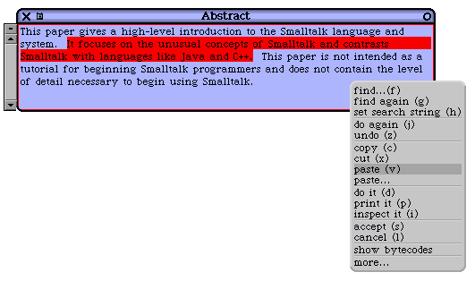
Harry H. Porter III
Computer Science Department
Portland State University
March 24, 2003
Home Page: www.cs.pdx.edu/~harry
Email: harry@cs.pdx.edu
This Paper:
www.cs.pdx.edu/~harry/musings/SmalltalkOverview.html
PDF version:
www.cs.pdx.edu/~harry/musings/SmalltalkOverview.pdf
Table of Contents
Introduction
Basic OOP Concepts and Terminology
The Smalltalk Object Model
Message Sending Syntax
Unary Messages
Binary Messages
Keyword Messages
Parsing Expressions
Discussion of Smalltalk Syntax
Smalltalk is Un-Typed
The Distinction Between Types and Classes
Dynamic Typing
Assignment Statements
Type Conversions
Type Casting
Expressions as Statements
Statement Sequencing and Grouping
Flow-of-Control Statements
The "If" Statement
The "While" Statement
The "For" Statement
The "Return" Statement
The Character Set
Literals and Predefined Names
Class Variables
Class Methods
Object Creation
Constructors
Arrays
Blocks
Flow-of-Control Statements Revisited
User-Defined Flow-Of-Control Constructs
An Example Using Blocks
Smalltalk as a High-Level Language
On Code Re-use
The Existing Class Hierarchy
Virtual Machine Implementation
Portability of Smalltalk
Method Syntax
Incremental Compilation
Garbage Collection
Self and Super
"NULL" versus "nil"
The "Message-Not-Understood" Error
Accessing an Object's Fields
Public and Private Methods
Metaclasses and Reflection
The Image
The Smalltalk Development Environment
The Workspace
The Code Browser
Browser Example
Debugging Smalltalk Code
Debugger Example
The Object Inspector
Smalltalk as an Operating System
Evaluation of Smalltalk's History
Concluding Remarks
Additional Resources
Please email any corrections to the author at:
About the Author
Smalltalk is an unusual and important programming language and everyone interested in programming
languages needs to know about it. This paper introduces Smalltalk and provides a brief introduction and
overview of the key concepts and aspects introduced by Smalltalk.
Smalltalk is the language that started the Object Oriented Programming revolution. Certainly, there was
some important work before Smalltalk (like Simula and Clu), but it was Smalltalk that first embodied
and articulated the fundamental concepts of OOP.
Not only did Smalltalk introduce the basic ideas of "object", "class", "message", "method", and
"inheritance", it ran with them. Languages that came after Smalltalk (like C++ and Java) have been
mere imitations, dwarfed by the shadow of the past and crippled by their compromises. These newer
languages have introduced few new concepts and in many ways have failed to realize the OOP ideals as
well as Smalltalk. Any success they have had has been due not to the purity of their designs, but to non-
technical considerations.
Today, Smalltalk is a mature, evolved system. Comparing it to (say) Java, Smalltalk is highly efficient,
extremely portable, easy to use, and very reliable. But more importantly, Smalltalk is still the most
enjoyable language in which to program. While the Java camp is busy bragging about "Just-In-Time"
compiling, some people forget that the original just-in-time compiling research was part of the Smalltalk
project.
We should remind ourselves that the Smalltalk research project brought the world a number of
innovations which have shaped today's computer landscape. Which of the following ideas were
pioneered by the group that developed Smalltalk?
(1) the mouse
(2) bit-mapped graphics displays
(3) windowing systems
(4) mouse-driven menus
(5) object-oriented programming
(6) "personal" computers
The answer is, of course, "all of the above." Aside from the introduction of color displays and portable
laptop computers, very little real innovation has occurred in user interfaces since the Smalltalk-80
project was completed in 1980.
Smalltalk was developed at the Xerox Corporation's Palo Alto Research Center (PARC) in the decade of
the 1970's. This was a 10 year project that culminated in the release, in 1980, of the Smalltalk-80
system. This included
The Smalltalk Language
The Smalltalk System
A large body of Smalltalk Code
The Smalltalk Virtual Machine
Complete Documentation and Source Code
In 1980, the outside world began learning what the PARC group had created. The Virtual Machine was
promptly ported to a number of different computers, the Smalltalk system booted to life on a number of
platforms, and the OOP revolution began as researchers began to study Smalltalk.
One major influence of the Smalltalk-80 project was on a young man named Steve Jobs. He came for a
tour at PARC and saw a demo of Smalltalk. He was shown three things: the Smalltalk user interface,
the Smalltalk language, and the idea of object-oriented programming. He fully appreciated the user-
interface ideas he saw, but he failed to understand Smalltalk or object-oriented programming.
Nevertheless, he went back to his company and asked his engineers to copy the user interface. They
responded by creating the Macintosh operating system.
The idea of object-oriented programming turned out to be a major revolution in programming languages.
Immediately after Smalltalk-80 was released, all important previous languages were retrofitted with
"object-orientation." We saw the introduction of the Common LISP Object System (CLOS), Object-
Pascal, and Objective-C. There was even a mutant thing called Object-Cobol. Several years later,
someone came along and made a second attempt at adding object-orientation to C and cleverly called the
result C++. Later still, Sun created a completely new OOP language called Java, which seems to be
catching on.
Where is Smalltalk today? Due to licensing restrictions and corporate machinations, the original
Smalltalk-80 system remained somewhat expensive and not available to the wider community. It was
appreciated in research and academic circles but not used by garage hackers or beginning students.
Then, several years ago, the original Smalltalk team re-united to produce a new, highly portable, highly
efficient virtual machine, called Squeak, and released this as public-domain software.
The Squeak implementation of Smalltalk appears to be superior to all previous implementations and has
spread like wildfire, breathing new life into the Smalltalk language. Suddenly, every programmer can
download and run Smalltalk for free. Squeak is an implementation of Smalltalk, but because Squeak has
the endorsement of the original team, the terms Smalltalk and Squeak are more or less synonymous.
Other implementations of Smalltalk will not be discussed in this document, and I suspect they will fade
in importance.
In this document, we will use the term Smalltalk to refer to the language and the large body of code that
has been developed. When we discuss implementation details that are specific to the Squeak
implementation, we will use the term Squeak. However, we should make clear that the language in
Squeak is exactly the Smalltalk-80 language. All of the original Smalltalk-80 software is included in the
Squeak system, although Squeak has added substantially to the growing body of code.
So what are the basic concepts of Smalltalk? They are: Objects, Fields, OOPs, Classes, Methods,
Messages, Inheritance, Receiver, Dynamic Binding. We will define each of these in turn, although the
reader may already be familiar with them.
The Smalltalk "object" is very similar to the Java or C++ object. In particular, each object is stored in
memory and has several fields, which can point to other objects or contain primitive data values. Each
object is an instance of a class.
An object is like a C "struct" or a Pascal record. The only difference between a record and an object is
that the object contains a single special field that identifies which class the object belongs to. In C++,
Java, and Smalltalk, there is a single hidden field in every object. In Smalltalk, this field is called the
"class pointer." In other languages, this hidden field is called the "V-table pointer" or "dispatch table
pointer".
In C++ we talk about "pointers" to objects while in Java we talk about "references" to objects. Both
concepts are more or less the same and references are implemented by straight pointers, which are just
memory addresses. In Smalltalk, references are sometimes called "object-oriented pointers" or "OOPs".
In Squeak, an OOP is implemented with a 32-bit pointer. So a Smalltalk object points to other objects,
but we say the object "contains OOPs to other objects".
Each object belongs to exactly one class. We say that each object is an "instance" of its class. Classes
are related in a tree-shaped hierarchy, so each class has exactly one superclass, except the class at the
root of the tree. So Smalltalk has single-inheritance. Smalltalk uses the terms "subclass", "superclass",
and "inherits from". C++ uses the term "derived class", but we prefer to say "subclass" instead.
When the programmer defines a new class, he or she is (in some sense) describing all the instances of
that class that may later be created. Two things must be described: (1) how the objects will be
represented, and (2) how the objects will behave. This is true in Smalltalk, C++, and Java.
To describe how the objects are represented, the programmer must list all the fields in the object, and
give each field a name. To describe how the object will behave, the programmer will give a series of
"methods".
A method is like a function, except that it is applied to a specific object. We also say that the method is
"invoked" on an object or "sent to" an object. The object in question is called the "receiver." Every
method is invoked on a receiving object. In C++ and Java, the receiver is called the "this object", but
Smalltalk does not use this this terminology. The "this" terminology makes for awkward wordings.
Methods in Smalltalk are similar to methods in Java and C++, where they are called "member
functions". Methods may take arguments and may return a result. The method body is a sequence of
executable statements. Methods are invoked from expressions, just as in other languages.
There is an important distinction between "methods" and "messages". A method is a body of code,
while a message is something that is sent. A method is similar to a function; in this analogy, sending a
message is similar to calling a function. An expression which invokes a method is called a "message
sending expression."
Smalltalk terminology makes a clear distinction between "message" and "method", but Java and C++
terminology sometimes confuses these concepts. A message-sending expression will send a message to
the object. How the object responds to the message depends on the class of the object. Objects of
different classes will respond to the same message differently, since they will invoke different methods.
When a message is sent to an object, a method will be selected and executed. Since we cannot know, in
general, the class of the object until run-time, the method cannot be selected until the message is actually
sent. This is called "dynamic binding", and Java, C++, and Smalltalk all have it. With straight
functions, the compiler can look at a "call" statement and figure out at compile-time (i.e., "statically")
which body of code to branch to. C++ (which always prefers efficiency over clarity) encourages static
binding and refers to dynamically bound methods as "virtual" methods, and refers to the virtual table.
In the Smalltalk programming model, all binding is dynamic. However, the compiler and virtual
machine will often bind methods statically for greater execution efficiency when it is can be done safely
and without changing the program's behavior.
So far, we have discussed only the similarities between Smalltalk and other languages. As you can see,
the fundamental concepts of OOP are all present in Smalltalk in very straightforward ways. The
Smalltalk terminology is a little different, but often seems more direct. The terms: "Object, Field, Class,
Method, Message, Inheritance, Receiver, and Dynamic Binding" all have their usual meanings.
We now turn to areas where there are differences between Smalltalk and other languages. We begin by
talking about what objects look like.
As mentioned earlier, each object contains zero or more fields.
The term "field" is preferable, but other languages use the term "data member" for the same concept.
Smalltalk uses the term "instance variable" to mean a field, so we say, "An object contains several
instance variables" to mean the same thing as "An object contains several fields" or "An object contains
several data members." We will use the terms "field" and "instance variable" interchangeably.
In languages like C++ and Java, we have objects and primitive values, like "int" and "double." In Java,
for example, each field can contain either a pointer to an object or it can contain a primitive value, like
"123". The same is true of Smalltalk objects; each field may contain either an OOP or a primitive value.
The unusual thing about Smalltalk is that there is only one primitive data type, and it is called
"SmallInteger."
A SmallInteger is stored as a 31-bit, two's complement (i.e., signed) integer. Note that Smalltalk uses 31
bits, not 32 bits. Thus, the range of values is -1,073,741,824 to +1,073,741,823. This is a little less than
the typical C++ "int", but the difference in range is not important.
Far more important is the fact that in Smalltalk, arithmetic overflow always results in automatic
promotion to arbitrary precision arithmetic and the result is always correct, while in C++, arithmetic
overflow results in mathematically incorrect results, generally with no warning or error message.
Why are there only 31 bits, instead of 32? The answer is connected with one of the most important
differences between Smalltalk and languages like C++ or Java.
Smalltalk is an un-typed language. The compiler does not know the types of variables. Any variable
may contain either a pointer (an "OOP") or a SmallInteger and, at different times, the same variable can
contain both SmallIntegers and OOPs.
This works because a single bit in each 32-bit word is used as a "tag" bit. In particular, the least
significant bit of all pointers will always be a "0". (All objects are word-aligned, so all addresses will
end with "0" anyway.) The least significant bit in a word containing a SmallInteger will always be a
"1".
In C++ and Java, there is an important distinction between primitive values and objects. We can pass
primitive values (like "int"s) to functions and methods, but we cannot send messages to the primitive
types. We can only send messages to objects.
In C++, the programmer may add new operators and functions that work on primitive types and, because
of the overloading rules, an effect similar to message sending can be achieved. Nevertheless, in Java
and C++, methods, which are sent to objects, remain fundamentally different from operators, which
work on primitive types.
This occasionally causes problems, and Java introduces "wrapper classes" like "Integer" for "int" and
"Double" for "double". Wrapper classes are a "hack" solution to give the primitive values some of the
benefits of classes and methods.
In Smalltalk, the primitive values (instances of SmallIntegers) are really first-class objects. There is a
single class called SmallInteger, and when the programmer adds a new method to it, it can be used in
exactly the same way as any other method. In Smalltalk, we can send messages to SmallIntegers.
At runtime, the virtual machine can differentiate between OOPs and SmallIntegers by looking at the tag
bit. If the value is a pointer, then the normal dynamic binding process is used. First, the pointer is
followed, and then the class of the receiver is determined, then a method is located and executed. On the
other hand, if the tag bit indicates that the value is a SmallInteger, then the virtual machine will look for
a method in the class "SmallInteger", and that method will be executed.
How does Smalltalk handle other kinds of primitive types, like "double", "bool", "char", and "string"?
There are two different techniques. First, we discuss how doubles and strings are handled, then we
discuss how bools and chars are represented.
Previously we said that each object contains a class pointer and zero or more fields. This was a
simplification. So here (all in one place) we will spell out the full truth. In subsequent sections, we will
explain and elaborate on this statement:
"Each object contains a header. The header contains enough information to deduce (1) the class of the
object, (2) the size of the object, (3) the hash code of the object, (4) the format of the object, and (5)
extra bits for use by the garbage collector. The header is followed by zero or more fixed fields. These
are followed by zero or more indexable fields. These are followed by zero or more bytes of raw data."
The object header contains a lot of information, but in the Squeak implementation it is cleverly encoded
and generally takes only 32-bits. Therefore, it does not impose much more overhead than the virtual
table pointer in C++.
We have mentioned that an object can have zero or more fields. For example, if some class definition
specifies 5 fields, then each and every instance of this class will have exactly 5 fields. Each field will
have a name, just as in C++ or Java. Each field will contain either a pointer to another object, or a
SmallInteger object directly. (These fields are the "fixed" fields, mentioned above. We'll discuss
"indexable" fields later.)
In addition, some objects will have "raw data bytes" after the fields. These data bytes are not tagged.
For example, floating point values are represented with a class called "Float". Each instance of this
class will have 8 bytes of raw data, giving a double-precision floating-point value, according to the IEEE
standard representation.
Strings of characters are represented with a class called "String". Each instance of this class will have a
single fixed field, which stores the length as an integer, and zero or more bytes of raw data. For
example, one instance of String might have 5 bytes to store the ASCII characters "hello" while some
other instance might have 16 bytes storing the characters "Now is the time". Smalltalk does not use the
terminating '\0' character and any String may contain any character.
Characters and Boolean values are represented differently. In both cases, there are a finite number of
possible values, and these values can be easily enumerated, so a different approach is used. There are
256 possible characters--the ASCII character encoding is used--and there are 2 Boolean values.
There is a single class called "Character" and there are exactly 256 instances of this class. New
instances of this class may not be created. Thus, each different character is represented as an object. If
there is a variable "x" and you wish to store a character in it, then you store a reference to the object
representing the character. This might seem wasteful, except that Characters are not often used in a
language that deals well with Strings, in which each character takes only 8 bits. The Unicode encoding
is also handled, using other classes.
There is also a class call "Boolean". There are two instances of this class, and they are given the names
"true" and "false". You may refer to the true and false objects in code sequences, just like in other
languages.
Next, we turn to a description of the syntax of Smalltalk. The syntax of Smalltalk is rather unusual and
is often a barrier to novice programmers, who are familiar only with languages in the Algol/Pascal/C
lineage.
Let us begin with message sending expressions. Each "message send" has a receiver, the message
name, and zero or more arguments. Smalltalk uses three different syntax forms, called "unary
messages", "binary messages", and "keyword messages".
First, let's start with "unary" messages. The "unary" syntax is used when there are no arguments. In
addition to showing the message-send in Smalltalk, we also show the equivalent in Java, as a contrast:
x reset "a message-send in Smalltalk"
x.reset() // a message-send in Java
In Smalltalk, comments are enclosed in double quotes. This throws everyone for a loop, at first, but it is
not such a bad convention. By using a syntax familiar from English literature, comments are more
easily read along with the code. With double quotes, comments tend to be visually integrated into the
code and do not stand out so much. In Java and C++, the notation tends to set the comments apart
visually.
Notice that no symbol is used for the message send; it is simply concatenation. Here, "x" is a variable
and "reset" is the message name. Here is another example, in which a number of unary messages are
sent to an object.
myDept manager name last
Here, the first identifier ("myDept") is a variable name and the remaining identifiers are message names.
Although it is not clear what this code does when seen in isolation, it looks typical of Smalltalk code.
We can imagine that we have classes like "Department", "Person", and "Name". Perhaps this
expression asks for the "manager" field in some instance of "Department". It then asks for the "name"
field of that Person. Assume that Names have fields called "first", "middleInit", "last". Finally, we are
asking for the manager's last name, which is presumably a String.
Here's the equivalent in Java:
myDept.manager().name().last() // In Java
Second, we look at "binary" messages. Here is an example:
x + y "in Smalltalk"
x + y // in Java
Even though the Smalltalk syntax looks like Java or C++, there is a very important difference. In
Smalltalk, this is a first-class message sending expression. The name of the message is "+", and it is
sent to the object named "x". There is a single argument. To compare it to Java, we really ought to
compare it to the following, which has an equivalent semantics to the Smalltalk version.
x + y "in Smalltalk"
x.plus(y) // the Java equivalent
With binary messages, there is no presumption about the class of the receiver. It might be a
SmallInteger or a Float or some user-defined class.
Binary messages always take exactly one argument. The message name can be any sequence of
characters chosen from a set of special characters. Legal examples include:
+
*
<=
==
<===> "I made this one up"
Third, we discuss "keyword" messages. These are the most unusual and cause the most confusion.
Let's start with this Java message-send:
x.addKeyValue(a, b) // Java
Here, there are 2 arguments and the message name is "addKeyValue". Here is the Smalltalk equivalent:
x addKey: a value: b "Smalltalk"
The message name in Smalltalk is "addKey:value:" and you will notice that it contains the colon
character. The colon character is used in keyword message sending and is syntactically significant in
understanding the keyword syntax.
Note that the message name is not one contiguous token. When used, the message name will be spread
out, with intervening argument expressions. Nevertheless, it is one message-send, with one receiver and
two arguments.
By looking at the message name, you can tell exactly how many arguments the message takes: just count
the colons! "addKey:value:" will take 2 arguments while "add:" will take one argument.
Keyword messages take one or more arguments and will therefore always have at least one colon in
them. (If you want a message with no arguments, you would use a unary message.)
Here is another example keyword message.
x addKey: a value: b useMap: myMap ifError: errCode
The message name is "addKey:value:useMap:ifError:" Four colons mean four arguments.
Next, we discuss grouping and parentheses. In Java and C++ parentheses are used for several syntactic
reasons. (They are used for message sending, expression grouping, and parameter list, for example.) In
Smalltalk, parentheses are used only for expression grouping.
The rules for parsing expressions are much, much simpler than in Java or C++. There are only 5 rules.
The first rule is that unary messages are parsed left-to-right. For example, the following 2 examples are
equivalent. You may use parentheses if you wish, but in this case it is unnecessary.
emp name last size
((emp name) last) size "equivalent"
The second rule is that binary messages are always parsed left to right. In other words, all binary
operators are left-associative and there is no precedence of some operators over others.
w + x + y + z
((w + x) + y) + z "equivalent"
Here is another example, showing that this rule is quite different from traditional languages.
x + y * z
(x + y) * z "equivalent"
If you want the multiplication to be done first, you must insert parentheses, like this:
x + (y * z) "parens required here"
The third rule is that unary messages have precedence over binary messages. Here is an example.
a + b sqrt
a + (b sqrt) "equivalent"
If you want the addition to be done first, you must insert parentheses:
(a + b) sqrt "parens required here"
The fourth rule is that keyword messages are parsed as the longest possible message. Here is an
example:
phoneBook at: x put: i
This expression sends one message (at:put:) with 2 arguments (x and i). If you want a different
expression, you must use parentheses. Here are a couple of examples:
(phoneBook at: x) put: i "parens required"
phoneBook at: (x put: i) "parens required"
The first sends the "at:" message and then sends the "put:" message to the result. The second sends
"put:" first and then uses the result as the argument to "at:".
The fifth rule is that keyword messages have the lowest precedence, lower than unary or binary
messages. Here is an example. Both expressions are equivalent; the parentheses are redundant and not
required.
phoneBook at: x name last put: 7250000 + ext
phoneBook at: (x name last) put: (7250000 + ext)
These rules are unfamiliar at first, and some readers are probably thinking "this is very different". The
key is that Smalltalk syntax is very simple. In practice, the syntax is learned quickly and becomes
second nature in no time.
Compared to Java or C++ syntax, Smalltalk syntax is simpler and cleaner. Technically, Smalltalk is
LL(1), which means it can be parsed with the simplest top-down parsing algorithms, while C++ is LR(1)
and cannot be parsed with any simple algorithms. What is hard for computers to parse is also hard for
programmers to parse.
To illustrate, here is an example C++ fragment:
... (X < Y ...
The reader cannot tell what kind of syntactic entity this is in isolation. Here are some possibilities:
(X < Y) ? foo() : bar(); // normal expression
(X < Y >) a . foo() // cast
(X < Y > * a = NULL; ... // variable declaration
void foo (X < Y > a); // formal declaration
While the Java / C++ syntax is close to standard mathematical notation for arithmetic expressions, it is
complex and sometimes tricky. The Smalltalk expressions tend to be less confusing and, as a result,
programmers tend to insert parentheses exactly when they are needed. Thus, parentheses tend to convey
a little more information in Smalltalk, leading to more concise code.
There is always the likelihood that the Smalltalk programmer may "mis-group" expressions. For
example, the programmer may forget parentheses in:
x + y * z
when he or she really intends:
x + (y * z)
But, in practice, this is not a significant problem of Smalltalk. Generally, beginning programmers tend
to mis-group expressions far more in C++ than in Smalltalk.
The more significant problem among beginning Smalltalk programmers seems to be the keyword
syntax, which is so unfamiliar.
However, among experienced programmers, the Smalltalk keyword syntax may be superior to the
Java/C++ syntax. An effect happens with messages with several arguments, where the number and
order of the arguments may become confused.
To illustrate, here is a Java/C++ method invocation:
x.processString (y, m, s, d)
In Smalltalk, the same method would probably be given a different name. Often, method names in
Smalltalk can be quite long, and are designed to indicate the parameters. For example, a Smalltalk
programmer might have chosen to call this method "processString:mapping:symbols:defaults:".
Here is an example of its use:
x processString: y mapping: m symbols: s defaults: d
As you can see from the example, there is more information in the expression about which arguments
are which. True, there is more typing than in the Java/C++ style, but the Smalltalk style unquestionably
leads to greater readability.
In languages like Java and C++, each variable must be declared and given a type. In Smalltalk, every
variable must be declared, but it is not given a type. Smalltalk has an unusual syntax for variable
declarations: the variables are simply listed enclosed in vertical bars.
int x, y, z; // Java/C++
| x y z | "Smalltalk"
One might reasonably ask, why bother to declare variables at all, if there is no typing information? The
primary answer is that every variable must be declared so that the compiler can set aside space for each
variable. Every variable will be allocated 32 bits and can hold either a pointer to an object or a
SmallInteger.
A second reason for declaring variables is so that the compiler can guard against misspellings of variable
names by the programmer. Every variable must be declared. If, in the body of executable statements,
the programmer misspells a variable name, the compiler will complain that the variable has not been
declared.
Languages like Java and C++ make a distinction between "types" and "classes". In Java, there are 3
kinds of types: classes, interfaces, and primitive types (like "int"). Each variable is given a type at
compile-time; this places restrictions on what values can be assigned to that variable at run-time.
In Smalltalk there are no constraints on what can be assigned to a variable. Any variable may point to
any class of object. It is the programmer's responsibility to make sure that a variable's value is of the
correct class at run-time.
Consider a Java or C++ variable:
int x;
It is the programmer's responsibility to assure that the specific value of "x" is correct at run-time, but the
compiler will assure that whatever code the programmer has written, the value will at least be some
"integer" value.
In Smalltalk, the compiler assures nothing. It is the programmer's responsibility to make sure the
variable contains both the correct value and the correct kind of value.
Which is better: a typed language or an un-typed language? Both approaches have their strengths and
weaknesses. In my opinion, neither approach is clearly superior.
If a type system is well-designed, then it is often the case that the compiler can catch bugs that would
otherwise go unnoticed until run-time. In this way, typed languages make programs more reliable and
readable. On the other hand, a strong type system occasionally makes it difficult to do certain things.
The programmer ends up writing code to defeat or work around the language's type system. It
sometimes seems that type system is a burden to the programmer, providing only a false sense of
protection.
With an un-typed language, the program is not cluttered up with type definitions and casting
expressions. The algorithm tends to show through more clearly. However, when reading complex code,
it can sometimes be virtually impossible to guess what kinds of data a given variable might point to at
some point in the code.
Sometimes, un-typed languages like Smalltalk are said to be "dynamically type," since each value has a
type, but the compiler does not check the types. Languages like Java and C++ are said to be "statically
typed." In a statically type language, the compiler checks to make sure every line of the program is
type-correct. At runtime, there is no checking and, in theory, the program will run faster. In practice,
Smalltalk pays only a very small penalty for dynamic type checking.
In a dynamically typed language, each value knows its type and these types are checked at run-time
rather than at compile time. By "each value knows its type" we mean that each object has an implicit
pointer to its class. This is part of the object and you can't have an object without having immediate
access to its class. Even with SmallIntegers, there is a tag bit that implicitly gives the class of the object
as "SmallInteger". Contrast this with C++, where you can have a 32-bit quantity without knowing
whether it represents an "int", or a pointer, or a "float".
The term "dynamic typing" is somewhat confusing and should be avoided, since it confuses the ideas of
"class" and "type". Classes are not types. Sure, Smalltalk keeps class information around at run-time
and relies on it, but so do "statically-typed" languages like Java and C++.
Smalltalk is an "untyped, object-oriented" language while Java is a "strongly typed, object-oriented
language". C++, as always, defies any simple description.
Next we discuss the syntax of common kinds of statements.
The assignment statement is familiar. In general, its syntax is:
variable := expression
Here are a some examples:
i := j+1
num := phoneBook at: name
x := y := z := 0
In Smalltalk we always have a simple variable name to the left of the assignment operator.
The Smalltalk programmer does not need to learn about l-values or r-values. In Smalltalk, we can never
"take the address of" a variable, explicitly dereference a pointer, or perform indirect loads or stores.
Objects are always pointed to by variables, and these pointers are always dereferenced implicitly. The
statement:
x := y
always copies a 32-bit value, which is either a pointer or a SmallInteger. Nothing complicated here. If y
points to an object then, after this assignment, x and y will point to the same object.
In any language, data values can be represented in different ways. For example, a number can be
represented as an integer, a float, or a string.
37 "SmallInteger"
3.7e0 "Float"
'37' "String"
Most languages provide ways to convert between one representation and another. In languages like Java
and C++, there are several ways to convert data from one representation into another.
int i; // C++
double d;
char * s;
...
d = i; // Implicit conversion
i = (int) d; // Cast
i = atoi (i); // Function call
In Smalltalk, there is only one way to convert data from one representation to another, and this is with
message-sending. In Smalltalk, there is a unary message for doing each kind of conversion. The
tradition is to give these methods names beginning with "as..." such as "asFloat" or "asString".
| d i s |
...
d := i asFloat.
i := d asInteger.
s := i asString.
There are a large number of such conversion methods, and the programmer will occasionally add more
as the need arises. Just as with any message, these are dynamically dispatched. The actual method to be
executed will depend on the class of the receiver at run-time. For example, every class understands the
"asString" message, but it is implemented differently for SmallIntegers, Floats, Characters, etc.
s1 := i asString. "int -> string"
s2 := d asString. "float -> string"
s3 := s asString. "string -> string (a nop)"
s4 := x asString. "??? -> string"
In other languages, the conversion details are scattered between the language casting rules, machine
dependencies, and library functions. Sometimes the exact rules for conversions (and casting) can be
rather ad hoc.
With Smalltalk, the exact algorithms involved are localized to the methods in question, and you can
easily browse the actual code to see what the details of the conversion are, if you should wish. For
example, to see whether the "float-to-integer" conversion does mathematically correct rounding or
simply truncates, you can look at the "asInteger" method in class "Float". (Smalltalk does truncation
toward zero; for rounding you would use the "rounded" method.)
Here is an example of "type casting" in Java/C++:
x = (Person *) y; // Java/C++
In this example, there is no modification or manipulation of the data. The cast is only necessary because
the language's type system forbids the programmer from using the data the way he or she wishes.
With Java/C++, type "casting" is often connected with type "conversion." For example:
i = (int) d; // Java/C++
Casting really does two things. First, it overrides the compiler's type system, and second, it inserts the
proper machine code to perform some transformation on the data.
Smalltalk has type "conversion" but does not having "casting". Since there is no type-checking, there is
never a need to defeat or work-around the compiler's type-checking.
Every message sending expression may stand alone as a statement. For example:
myPhoneBook at: name put: num
Every method invocation will return a value. When an expression occurs as a statement, then the value
is simply discarded.
Statements can be listed in sequence. Statements are separated by periods, while in Java/C++ they are
terminated by semi-colons. For example:
i := j+1.
num := phoneBook at: name.
x := 0
Statement may be grouped into "blocks", using brackets. Here is an example block:
[ i := j+1.
num := phoneBook at: name.
x := 0
]
Contrast the above code to Java/C++:
{ i = j+1; // Java
num = phoneBook.at(name);
x = 0;
}
All remaining kinds of statements follow the message sending syntax, so their syntax will look
unfamiliar at first. Java and C++ use keywords like "if", "else", "while", and "for".
Smalltalk does not have any keywords! Instead, each of the flow-of-control statements is done using a
message. For example, the "if" statement uses the message "ifTrue:ifFalse:". So at this point, you have
already learned 90% of Smalltalk's syntax!
Consider the following "if" statement in Java/C++:
if (x < y) { // in Java
max = y;
i = j;
} else {
max = x;
i = k;
}
Here is how the same thing would look in Smalltalk. The "if" statement begins with the boolean
expression.
(x < y) ifTrue: [ "in Smalltalk"
max := y.
i := j
] ifFalse: [
max := x.
i := k
]
The brackets are required in statements like the "if" statement, even if there is only one statement. More
precisely, both arguments to the "ifTrue:ifFalse:" method must be "blocks".
There are a number of variations on the "if". For example, the "else" part is optional:
(x < y) ifTrue: [
max := y.
i := j
]
We can also reverse the sense of the test:
(x < y) ifFalse: [
max := x.
i := k
]
Technically, these are 3 different messages:
ifTrue:ifFalse:
ifTrue:
ifFalse:
Here is an example of a "while" loop:
[i < 100] whileTrue: [
sum := sum + i.
i := i + 1
]
The conditional expression must be in brackets here (unlike "if") for the reason that it must be re-
evaluated each time around the loop. We'll defer an explanation, until we discuss "blocks" in more
detail.
Here is an example "for" loop in Smalltalk:
1 to: n do: [ :i |
sum := sum + i.
]
In this example we see some new syntax with the ":i |" notation. We'll discuss this later when we talk
about blocks. In short, the body of the loop is executed iteratively with different values of "i", ranging
from 1 to n. The variable "i" is local to the body of the loop, and is not accessible elsewhere.
Here is the Java/C++ equivalent:
for (int i=1; i<=n; i++) { // in Java
sum = sum + i;
}
Here is another Smalltalk code fragment, illustrating a different looping construct.
"Compute e raised to the N-th power"
result := 1.
n timesRepeat: [
result := result * 2.718
]
There are many similar constructs, but we will not show any others here.
Finally, the return statement in Smalltalk uses the caret (up-arrow) character. Here is an example:
^ i+3 "in Smalltalk"
return i+3; // in Java
Smalltalk uses the standard ASCII code with two minor exceptions. The caret character (^) is displayed
as an up-arrow and the underscore character (_) displayed as a left-arrow.
ASCII Smalltalk
===== =============
^ [up-arrow]
_ [left-arrow]
The programmer may write assignment using either the left-arrow or the assignment token (:=). The
following are equivalent:
x := 123 "equivalent"
x _ 123
Return is always written with the same character, but the code looks a little different if it is viewed
within Smalltalk or from some other system, like Unix.
[up-arrow] i+3 "viewed in Smalltalk"
^ i+3 "viewed in Unix"
The Smalltalk system normally displays text in a proportional-width character font, so Smalltalk code
actually looks like the following:
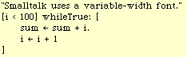
However, I will continue to show Smalltalk code in a fixed-width font since it stands out from the text
more clearly. Also, I'll stick with the familiar character set.
Smalltalk allows integers, floats, characters, and strings to appear as literals in the code, just as Java and
C++ do. There are minor differences in the syntactic details, but no interesting differences. There are
also several predefined names. These are identifiers that denote specific objects.
Smalltalk Java Equivalent
========= ===============
123 123
12.34 12.34
$a 'a'
'hello' "hello"
nil null
true true
false false
self this
super super
In Java or C++, the programmer may add "static data members" and "static member functions" to any
class. Smalltalk has a similar ability, although static data members are called "class variables" and static
member functions are called "class methods". (Recall that Smalltalk calls normal fields "instance
variables" and it calls normal member functions "instance methods".)
Smalltalk Java/C++ Terminology
=================== ========================
instance variable data member
instance method member function
class variable static data member
class method static member function
What is a "class variable"? A class variable is globally accessible throughout the class. There is only
one copy of each class variable and it is shared by any and all instances. Whenever a new class is
created, the programmer specifies whether the class will have any class variables and, if so, their names.
A class variable may be accessed from any code within the class, without reference to any specific
instance.
As an example, assume we have a class called "Person" and we want to keep a count of the number of
Person instances we have created so far. We might choose to add a class variable called "PersonCount"
to the Person class. Every time a new instance is created, we want to increment this counter.
The syntax for accessing class variables is straightforward: a simple identifier is used to name the
variable. By convention, class variables are capitalized.
PersonCount := PersonCount + 1
Smalltalk class variables do not differ much from Java/C++ static data members, except that in
Smalltalk there is never a need for qualified names. Here is an example of a qualified name:
Person::PersonCount // A qualified name in Java/C++
There is nothing like this in Smalltalk.
As mentioned above, Smalltalk has "class methods", which are essentially like the static member
functions of Java/C++.
A class method is a method that is part of a class, but is not invoked on any particular instance. They
may also be invoked before any instances have been created.
For example, assume we have a class called "Person" with several class variables keeping track of
things like the total count of Person instances. The programmer might create a class method called
"printStatistics" to print out the values of all the class variables.
To invoke a class method in Smalltalk, a message is sent to the class itself. For example, we would
invoke our class method like this:
Person printStatistics
This example involved a "unary" message with no arguments, but the full message-sending syntax is
available for class methods. For example, here we invoke another class method, with two arguments:
Person printStatisticsOn: outStream indenting: 4
Note that the class itself serves as the receiver of the message, whereas for a normal (instance) method,
the receiver would be an instance of Person.
In Smalltalk, every class is represented by an object called a "class-representing object". These objects
are given names that match the name of the class. These names are traditionally capitalized.
For example, the "Person" class is represented by an object called "Person", and the "Student" class is
represented by an object called "Student".
We saw this above, when we invoked a class method by sending a message to the class, whereas we
would invoke an instance method by sending a message to an instance of the class.
In Java or C++, new instances are created with a special syntax involving the "new" expression.
p = new Person; // In Java/C++
In Smalltalk, there is no special syntax or semantics for object creation. A new instance of a class is
created simply by sending the "new" message to the class-representing object. Here is an example:
p := Person new "In Smalltalk"
In Smalltalk, the "new" method is just a normal class method. There is no special syntax or semantics.
Normally, the "new" method is inherited from an implementation in class "Object". This default
behavior will create a new object and will return it.
Occasionally, the programmer will override the "new" method to perform some initialization or
bookkeeping that must be done whenever an object is created. For example, we might override "new"
to increment the "PersonCount" variable.
In Smalltalk, all variables and fields are always initialized to "nil". In our version of the "new" method,
we might want to give some fields different initial values.
Object creation in Java and C++ involves "constructors". Smalltalk does not need constructors, and they
do not exist in Smalltalk. In Java/C++, there is a rather complex syntax and semantics related to
constructors. Smalltalk provides the same functionality with no new syntax or semantics.
Let's compare the Smalltalk approach with the Java/C++ approach.
In Java/C++, constructors are involved in the creation and initialization of new instances. One typical
use would be to provide default values for some of the fields in the object. Here is an example. The
idea is that we are providing initial values for the "name" and "age" fields. Perhaps we are also
modifying some static variables, such as "PersonCount", within the constructor.
p = new Person ("Porter,Harry", 45); // In Java/C++
In Smalltalk, we would create a class method taking two parameters. In keeping with Smalltalk
convention, we might name it "newName:age:". Here is how we invoke it:
p := Person newName: 'Porter,Harry' age: 45 "In Smalltalk"
In this particular example, the class method would probably invoke the inherited "new" method to create
the object, then modify some of its fields, and perhaps update a class variable or two.
One interesting distinction between the Smalltalk approach and Java/C++ constructors is that the
Smalltalk class method actually allocates the object, while the Java/C++ constructor is more like an
"initializer" method, which is invoked on the instance after it is allocated.
There is no special syntax for array manipulation in Smalltalk. In fact, the language has no particular
support for arrays. Instead, there is a class called "Array" which provides the functionality of arrays.
When we create a new array, we must specify the size of the array. Here is an example:
arr := Array new: 10
To access or retrieve an element from an array, we use the "at:" method. To store a value into an array,
we use the "at:put:" method. Smalltalk also has a syntax for specifying array constants. Here are
examples, contrasted with Java/C++:
Smalltalk Java/C++
==================== ===============
j := arr at: (i+4) j = arr[i+4];
arr at: i put: n arr[i] = n;
#(3 2 1) {3, 2, 1}
The Smalltalk syntax is not as natural or easy to read as Java/C++.
My impression is that arrays are not used as frequently by the Smalltalk programmer as they are in
Java/C++. Instead, the Smalltalk programmer often works with data structures like Sets, Lists, and
Dictionaries. These, in turn, are implemented with arrays. Nevertheless, arrays are useful in many
applications and are widely used.
The Smalltalk approach to array indexing errors is to check and flag every error at runtime. Any attempt
to provide a bad index value will result in an error notifier popping up on the screen.
We mentioned earlier that an object can contain "fixed fields", "indexable fields", and/or "raw data
bytes". By fixed fields, we mean the normal instance variables we are familiar with. Each fixed field
has a name and they are accessed by name. When a class is defined, the programmer will specify the
names of the fixed fields. All instances of this class will have the same number of fixed fields.
Unlike the fixed fields, the indexable fields are not given names but are accessed by number. Each
instance of a given class may have a different number of indexable fields. When the class is defined, the
programmer says only whether indexable fields are allowed in instances or not; the actual number of
fields in some object is specified when that object is created.
Arrays and Strings are implemented using objects with indexable fields. If, for example, you wish to
create a new class (such as a "PersonList"), you might want to use indexable fields or you might just
include a single fixed field which will point to an Array object.
We next look at "blocks" in more detail, since they are an important component of Smalltalk. Blocks
differ from anything found Java or C++. Blocks are similar to "closures" or "lambda-expressions" or
"nameless functions" found in other languages.
A block is a sequence of executable code. Syntactically, a block has a number of statements, surrounded
by brackets. For example:
[
x := x + 1.
y := x * y.
z := x + y
]
This example contains only assignment statements, but in general blocks may have flow-of-control
statements and return statements as well.
In the above example, the variables x, y, and z are defined somewhere else, outside of the block.
A block may also take arguments. In the following example, the block takes 2 arguments. These are
represented by the formal parameter variables "a" and "b".
[ :a :b |
b := x + a.
y := a * y.
z := x + b.
a - x
]
In this block, the last statement is a simple expression. It will be evaluated, just like all expressions in
the block. However, the value of the last expression executed will be returned from the execution of the
block.
Contrast this block to the following function, given in Java/C++ syntax:
void foo (int a, int b) { // Java/C++
b = x + a;
y = a * y;
z = x + b;
return a-x;
}
The most important difference between blocks and functions is that, in Java/C++, the function has a
name "foo", while in Smalltalk, the block does not have a name.
Another difference is that the parameters to the Java/C++ function have types, while the parameters to
the block are untyped. In the Java/C++ function, we can see that the values of "a" and "b" will be
integers. In the Smalltalk block, the values of "a" and "b" may be SmallIntegers or Floats. In fact, they
could be anything that can handle the messages involved ("+", "*", and "-").
Each block is an object. More precisely we can say that every block is represented by an object which is
created at run-time and which can be stored in variables, like any other object.
Consider this code:
myBlock := [ :a :b |
b := x + a.
y := a * y.
z := x + b.
a - x
]
The execution of this assignment statement will create a Block object, but it will not execute the
statements inside the block. Execution will happen later.
To cause the execution of the block object, we send it a message! In particular, we send the
"value:value:" message. For example:
myBlock value: 34 value: (j-2)
This block returns a value, so we might want to capture that value. Here is an example:
w := myBlock value: 34 value: (j-2)
The block takes 2 arguments so we used the "value:value:" message. When a block requires 3
arguments, we use the "value:value:value:" message. There are many such messages.
If the block takes no arguments, we use the "value" unary message. For example:
giveRaise := [salary := salary + 1000].
...
giveRaise value
Now that we understand the idea of a Smalltalk "block", we can look at the flow-of-control statements
again and see how they really work. Consider this "if" statement:
(x < y) ifTrue: [
max := y.
i := j
] ifFalse: [
max := x.
i := k
]
This is nothing more than a message-sending expression, in which the two arguments happen to be
blocks:
expr ifTrue: [...] ifFalse: [...]
We assume that the receiver is a Boolean. By this, we mean that the expression "expr", after being
evaluated, will either be the "true" object or the "false" object.
Previously, we mentioned the "Boolean" class. This class has two subclasses called "True" and "False".
Note the capitalization of the class names. The "true" object is the one and only instance of the class
"True", and the "false" object is the one and only instance of class "False."
The "ifTrue:ifFalse:" message takes two arguments, which we can call "thenBlock" and "elseBlock".
receiver ifTrue: thenBlock ifFalse: elseBlock
The "ifTrue:ifFalse:" message is implemented differently in "True" and "False". In particular, the
implementation in True will send the "value" message to the "thenBlock", while the implementation in
False will send the "value" message to the "elseBlock".
In class "True"...
In the "ifTrue:ifFalse:" method...
Execute: "thenBlock value"
In class "False"...
In the "ifTrue:ifFalse:" method...
Execute: "elseBlock value"
So you can see that there really is no "if" statement in Smalltalk! We just have objects, messages,
methods, and dynamic binding. With these concepts, the "if" statement can be implemented. To
describe the Smalltalk system, it is sufficient to describe objects, messages, methods, and dynamic
binding. Things like "if" and "while" then become special cases.
The same is true of all other flow-of-control constructs like "while" and the "for" loop ("to:do:by:").
One benefit of Smalltalk's approach to flow-of-control is that programmers can add new flow-of-control
constructs as they are needed. For example, consider the existing class called "Dictionary". This class
is widely used by Smalltalk programmers. Each Dictionary maps "keys" to "values" using hash-table
based lookup algorithms.
Let's start by creating and initializing a new Dictionary:
phoneBook := Dictionary new.
phoneBook at: 'Smith' put: 123.
phoneBook at: 'Jones' put: 456.
...
A reasonable task might be to iterate through all the keys and their corresponding values. Smalltalk
comes with a method to do this, called "keysAndValuesDo:". In this "flow-of-control construct", we
will use a block with two "index" variables. One is a key and the other is a value. This method will
iterate through the entire Dictionary and execute the same body of code for each key-value pair.
Let's say we want to loop through the Dictionary and print each key-value pair. Here is how that "loop"
would be coded in Smalltalk:
phoneBook keysAndValuesDo: [ :k :v |
... print k ...
... print v ...
]
This example shows that the range of control structures in Smalltalk is much broader and more general
than in traditional languages. There is a large set of pre-existing constructs (all following the basic
message-sending syntax) and programmers can add new constructs whenever the need arises.
The practical consequence is that programs become clearer and implementation details tend to get
abstracted and compartmentalized more than in other languages.
What might this Dictionary iteration look like in Java/C++? Here is an example attempting to mimic
this using the Java/C++ "for" loop. You can judge whether or not this is clearer than the above
Smalltalk code, or whether the comparison is even fair.
for (k=firstK, v=firstV; ki<lastK; k++, v++) {
... print k ...
... print v ...
}
The observant reader might ask whether the Smalltalk approach of using messages and dynamic binding
for flow-of-control constructs leads to execution inefficiencies. To achieve good performance, the
Smalltalk compiler looks for certain messages (like "ifTrue:ifFalse:" and "while:") and handles them as
special cases. Instead of inserting the code to perform full message sending, the compiler replaces them
with more efficient code sequences involving tests and branches. For common constructs like "if" and
"while" statements, the resulting code looks like what any other compiler would generate.
In this section we give an example of blocks that attempts to show some of the real strength of
Smalltalk. But first we need to know a little bit about the existing classes.
The Smalltalk system comes with a number of predefined classes. A very important group of classes
concerns collections, like sets, lists, and dictionaries. Let us look at the class named "Set". We can
create a new Set, and then add objects to the Set with the "add:" message.
Let us assume that we have created a user-defined class called "Employee". Assume that we have
already created and initialized several employee objects. So let's build a new Set:
mySet := Set new.
mySet add: emp1.
mySet add: emp2.
mySet add: emp3.
...
Suppose we want to adjust some employee's salary. Assume that each Employee object understands an
"increaseSalary:" message. We might also have to recompute the tax withholdings and print a
notification form, so assume that we have messages for these actions, too.
To give a raise to "emp3" we might create code like the following. (The details are unimportant; the
point is that we need several statements to do the work.)
emp3 increaseSalary: 1000.
emp3 recomputeTaxes.
emp3 printNotification.
In Smalltalk, we might create a block that will raise an employee's salary by 1000.
giveRaise := [ :e |
e increaseSalary: 1000.
e recomputeTaxes.
e printNotification.
]
This block is parameterized by the employee, so it can be used on any employee. We can use it to give
raises to all the employees with code like this:
giveRaise value: emp1.
giveRaise value: emp2.
giveRaise value: emp3.
...
Of course this approach would be tedious for a company with a lot of employees.
Now comes the real leverage. The "Set" class comes with a method called "do:". This method takes a
single argument. The argument must be a block that takes a single argument. The "do:" method will
execute the block on each element in the set.
Using the "do:" method and the block we defined earlier, we can give everybody a raise with one simple
statement:
mySet do: giveRaise
Next, we want to make the actual amount a parameter, rather than hard-coding in the number 1000.
Here is a new version:
raiseAll := [ :amt |
giveRaise := [ :e |
e adjustSalary: amt.
e recomputeTaxes.
e printNotification
].
mySet do: giveRaise
]
Now we can give raises to all the employees from time to time with code like this:
raiseAll value: 1000.
...
raiseAll value: 500.
...
raiseAll value: 800.
Notice that the above code involved some looping, since we had to go through all employees in the Set.
But nowhere did we actually code a "loop" statement. The actual looping details were buried down
inside the "do:" method in class "Set".
In Smalltalk, we are often programming at a level above the level of "if" statements and "loops." We
are manipulating actions and focussing on the message-sending communication between objects. Often
the actual algorithms (the specific tests and loops) are packaged in ways that allow us to avoid looking at
them. In this way, Smalltalk can be said to be a "higher level" language than languages like C++.
After programming in Smalltalk, the general feeling when you move back to a language like C++ is that
you are messing with too many details. It is an identical feeling of returning to assembly language
programming after programming in C++: you feel that the details are very annoying and you seem to
spend so much time thinking about them that it takes forever to code and debug your algorithm.
Many good programmers are capable of coding just about any algorithm in assembly code, yet there are
many algorithms that are so complex that it would take almost forever in assembly code. Using C++
makes the complexity more manageable. It makes it possible to complete a project that would have
bogged down in details with assembly language.
A similar effect happens in Smalltalk! An algorithm that can be coded in Smalltalk in an hour might
take 10 hours in C++. An extremely complex program might be doable in Smalltalk, but simply
overwhelming in C++.
One early and very successful use of Smalltalk was in "prototyping". Essentially, this means that the
program is written in Smalltalk first, and then re-written in a lower-level language like C++. The
Smalltalk version is completed quickly and can be altered as specifications change and solidify. Then,
after everyone is up to speed on the problem domain and algorithms to be used, the program can be re-
written in C++ in preparation for final delivery.
One of aim of Object Oriented Programming is "code re-use". The idea is that code is written and tested
once and then re-used by programmers over and over. In the "Employee" example above, we indirectly
used the looping code in the "do:" method in the Set class. This code was probably written back in the
70's and has been used constantly since.
Some of the collection classes involve extremely sophisticated algorithms, which have been tested and
tuned for over 20 years. For example, the class "Dictionary" provides lookup tables, mapping "keys" to
"values", using hash-table algorithms.
Although the average Smalltalk programmer has probably never coded a hash-table lookup algorithm,
he or she uses the Dictionary class whenever a look-up table is needed. Virtually every single look-up
table used in a Smalltalk program in the last 20 years has incorporated tested, tuned, and well-studied
hash-table algorithms. In no language has the ideal of code re-use been realized more successfully than
in Smalltalk.
Today Smalltalk is delivered with about 1500 classes. These classes provide a tremendous amount of
functionality. These classes can be roughly grouped into the following general categories:
Basic System Classes
Object, Boolean, ...
Numeric / Arithmetic Classes
Collections
Sets, Arrays, Lists, Dictionaries, ...
Tools
Compiler, Code Browser, Debugger, Inspector...
Graphics
Points, Lines, Text, ...
Windowing system
Text Editing
The Morphic Subsystem
Sound and Speech Synthesis
Access to the Outside World
Disk-File Access
Network / Communication
Applications
Web Browser, E-mail, Paint, ...
Virtual Machine Code
Of course really learning Smalltalk involves learning how to use the existing body of code. To be an
effective programmer you have to become familiar with a sizeable subset of these classes and their
methods.
In this paper, we will not attempt to survey all these classes, but we can make the following remarks.
The numeric model is a little different from that in Java or C++. For example, integer arithmetic always
overflows automatically into arbitrary-precision arithmetic. There is a class called "Fraction", which
implements Rational numbers. This is different from floating-point representation. For example, "1/3"
in Smalltalk will give an exact result.
The Collection framework has been well-designed and use of these classes accounts for a significant
amount of code re-use. Collection classes are easy to use and the algorithms employed are well-tuned
for performance.
While the code for the various tools, like the compiler and debugger, is available, most programmers
will never look at this code.
The graphics code is widely re-used by programmers. The "Morphic" subsystem is a new approach to
graphic widgets, that is both extremely flexible and easy to understand and program.
All source code is supplied and any method can be altered by any user.
The Smalltalk system uses a "virtual machine interpreter" which runs as an application on the host
computer. Initially, the Smalltalk-80 interpreter was hand-coded in assembly language for efficiency.
This approach made porting quite difficult and made the virtual machine difficult to modify.
The innovation of the "Squeak" implementation was to re-code the virtual machine entirely in Smalltalk
itself. More precisely, it is coded in a limited subset of Smalltalk. The virtual machine is not very
complex and the initial re-coding did not take long. Simultaneously, a "Smalltalk-to-C" translator was
also written in Smalltalk.
The porting approach is this. An existing Smalltalk system must be available. Using it, the "Smalltalk-
to-C" translator is used to automatically produce a new copy of the virtual machine written in "C". This
"C" program is then compiled using the host "C" compiler. Of course, some virtual machine routines
will need to be hand coded. For example, the interface to the host OS must be hand-tailored.
Finally, given the newly compiled virtual machine, a preexisting image of all the objects can be loaded
and execution can begin on the new computer. Once the Virtual Machine is created, the full Smalltalk
environment instantly springs to life.
This strategy makes the implementation of the virtual machine fast, easy, and highly portable. In the
few months after the initial Squeak implementation was completed, it was ported to all the major
systems. Today, it is more widely available than almost every other language.
Each Smalltalk/Squeak system follows exactly the same virtual machine specification. Both the objects
and the virtual machine code are represented identically on all machines. Although the PC virtual
machine, the Mac virtual machine, and the SPARC virtual machine are all different application
programs, the Smalltalk objects and their representation in memory is bit-for-bit identical.
Therefore, Smalltalk code written on a Mac, PC, or Unix/Linux runs instantly on any other computer
with no changes. Smalltalk has achieved a level of hardware portability greater than Java. Portability is
simply not an issue with Smalltalk programs.
Next we show a couple of example methods. For the first example, we are assuming that we have a
class called "Person" with a field called "birthdate". This method is called to compute the Person's age
and return it. The method is a unary message called "getAge".
getAge
"Return the receiver's age."
| x |
x := (Date today) - birthdate.
^ x
First, we see that the method begins with the message name and any parameters. Unary messages have
no parameters, so the header of this method simply has the message name "getAge". Method headers
are always shown in boldface in the Smalltalk code browser, so it makes it easy to see this is a method.
After the header, we see a comment.
Next, we see a declaration of local variables. There is only one local variable, called "x". In general,
we can have several local variables. They would be separated by spaces and enclosed in vertical bars.
For example:
| x y myVar z cnt |
Finally, we see a sequence of statements, separated by periods. The last one is a return statement.
Just as in Java or C++, we can freely access (i.e., read and write) the fields of the receiver within a
method. Here we use the value of the receiver's "birthdate".
The code in this method makes use of the pre-existing class named "Date", which understands the
"today" message. Dates may be subtracted, just like numbers.
This method could be re-written to avoid the use of the temporary "x". The improved version is:
getAge
"Return my age."
^ (Date today) - birthdate
In the next example, we show another method from class "Person". Here we assume that each Person
has a field called "employer". This method is a keyword method and is passed a single parameter. It
modifies the "employer" field.
changeEmployer: aCompany
"Change the receiver's employer to 'aCompany'."
employer := aCompany
Here is how this same method would look in Java:
void changeEmployer (Company aCompany) {
// Change the receiver's employer to 'aCompany'.
employer = aCompany;
}
Notice that the "changeEmployer:" method does not explicitly return anything. In Smalltalk, methods
always return a value, whether or not they end with a "return". If the "return" statement is left out, the
compiler will insert code to return the last expression evaluated. Often the returned value will be
ignored and not used by the sending expression.
In the code that sends a message, we can ignore the returned value whenever we want. Since the
"changeEmployer:" method is invoked for its effect (and not its returned value), we would probably
invoke it like this:
myEmp changeEmployer: myComp
However, the following code is perfectly legal, although probably misleading:
x := myEmp changeEmployer: myComp
Each time the Java or C++ compiler is run, it processes a number of methods and, perhaps, even several
classes at a time. In Java and C++, the compiler is a heavy-weight operation, producing one or more
executable files which must be subsequently linked, loaded and run.
A typical Java file would contain an entire class, including many methods. For example:
class Person {
String name;
Date birthdate;
Company employer;
...
Date getAge (...) {...}
void changeEmployer (...) {...}
...
}
A fundamental difference between Smalltalk and other languages is that the unit of compilation in
Smalltalk is a single method. In Smalltalk, the programmer edits a method. After finishing, the
programmer clicks a button and the method is re-compiled. The compilation is instantaneous, much
faster than C++ or Java. Furthermore, there is no separate link or load phase.
With Java/C++, there is a clear distinction between the "compilation" phase and the "run-time".
Smalltalk is different in this respect; the Smalltalk system is running at all times and all classes (about
1500 of them) are present and loaded all the time. When new a class is created, it is added incrementally
to the running system.
After the class is created, it is immediately usable, but first the programmer will probably want to add a
few methods to the class. With this approach, there is no syntax for the class as a whole; there is only a
syntax for expressions, statements, and methods. Also note that there is no need for a method to be
enclosed in braces, as in Java or C++, since there is no syntactic need.
The Smalltalk compiler is written in Smalltalk itself and is, of course, composed of many classes and
methods. The compiler runs in the very same object space as the classes that it is compiling. If you
wish, you can modify some method of the compiler itself. The change will take effect immediately.
Doing this can be risky, of course. If you change the compiler and break it, you will not be able to
compile a fix!
(This might sound dangerous; it is not. We'll discuss Smalltalk's approach to robustness, later. The
general spirit of Smalltalk is, "Go ahead, try making a change to the compiler. If you mess things up,
you will not be inconvenienced too much but you will have to take some actions to restore whatever you
messed up.")
While Smalltalk does not have a syntax for a complete class, there is an informal syntax for showing
complete classes in the literature and a textual representation for saving entire classes in text files.
When it comes to garbage collection, Smalltalk is like Java and is unlike C++. All objects are allocated
in a heap and the heap is collected for garbage periodically and automatically. There is no explicit
"object deletion" operation.
Objects are collected when they become unreachable. There is no "finalize" method or "object
resurrection"; the semantics is simpler than Java's garbage collection semantics.
Much of the original research on collecting heaps was done in the context of Smalltalk. The "generation
scavenging" algorithm was developed specifically to make Smalltalk's garbage collector fast.
Whenever the garbage collector runs, all Smalltalk execution is suspended. Nevertheless, the garbage
collector is quite efficient. For example, when the Smalltalk code is manipulating audio frequency data,
the music comes to a complete stop when the garbage collector runs, then resumes playing. For a minor
collection, the gap is not noticeable to the human ear. For a major collection, on my machine (circa
1998), the gap is about .25 seconds.
Within any method, the programmer may use the special identifiers "self" and "super". "Self" refers to
the receiver itself. The meaning of "self" is identical to "this" in Java and C++. Messages can be sent to
"self" and "self" can be used as an argument in message-sends. For example:
self computeTaxes.
phoneBook at: self put: i
The programmer may also use "super", which is just like "super" in Java. In particular, "super" and
"self" both refer to the same object, the receiver of the method. The difference occurs when a message
is sent to "super" instead of to "self". In this case, the method lookup begins in the super-class of the
method that used "super".
In other words, the "super" mechanism is used to invoke methods that are overridden in a subclass. C++
uses the notation:
ParentClass::method()
to achieve the same effect.
Smalltalk's approach to NULL is different than the approach taken in Java and C++. In Java and C++,
NULL is a special pointer value: NULL is the "zero pointer". In Java/C++, you can test for the NULL
pointer. In C++, you can cast NULL into the integer zero and you are guaranteed that no object will
ever be stored at address zero.
In Smalltalk there is a special object, called "nil", and this object is used to achieve almost the same
effect as NULL in Java and C++. Here are some example statements, showing that the Smalltalk
approach leads to similar-looking code sequences:
if (p == NULL) {...} // In Java/C++
p = NULL;
(p == nil) ifTrue: [...] "In Smalltalk"
p := nil
The "nil" object is similar to the "true" and "false" objects in that all three of these objects belong to
their own special classes (named "UndefinedObject", "True", and "False"). Each of these 3 classes
describes the behavior that is unique and special to its solitary instance.
Since "nil" is an object, it can be sent messages just like any other object. For example, all objects
understand messages like these:
isNil
notNil
asString
Although the "nil" object is no different than any other object, it responds to these messages in its own
unique ways. There are also messages "ifNil:" and "notNil:" which allow nil-testing to be done in an
easy-to-read way.
Consider this test, shown in Java/C++:
if (p != NULL) { // In Java/C++
... do something with p ...
}
Here's how this would look in Smalltalk.
p notNil: [ "In Smalltalk"
... do something with p ...
]
As another example, we could do the test in the reverse sense:
p isNil: [
... deal with the case when p is nil ...
]
The fact that the Smalltalk examples read closer to English seems to make them less error-prone.
One practical consequence of Smalltalk's approach is that the virtual machine never needs to do any
special-case testing for a NULL pointer. It can therefore run faster, as a result. In Smalltalk, all
message-sending occurs in exactly the same way, whether the object is "nil" or not. In Java/C++, the
runtime must either perform a test to guard against the NULL pointer or permit the possibility that the
program will crash when a NULL pointer is used incorrectly.
Another benefit of Smalltalk's approach to "nil" is that the garbage collector can run faster since it never
needs to check for NULL pointers. (There is a cost to checking the "tag" bit in each word, but this issue
is orthogonal to the issue of NULL versus nil.)
Another important difference between Smalltalk and languages like Java or C++ is how the system deals
with incorrect attempts to send messages. Ideally, the programmer would never try to send a message to
an object that does not understand the message, but bugs happen.
Let's say the programmer has a pointer to an object (call it "x") which he or she thinks is a Person
object, but which is not. Assume the programmer wishes to send it a message, such as "printName".
In Java, the compiler prevents any attempt to send a message to an object that does not understand it.
Instead, the problem is shifted to the casting expression. Here's how the code Java might look:
Person p; // In Java
p = (Person) x;
p.printName ();
The programmer first casts the pointer, then sends the message. If "x" points to something besides a
Person, the cast will fail and the system will throw a "ClassCastException".
If "p" happens to be NULL when a message is sent to it, the runtime system will catch the attempt to use
a NULL pointer, and will throw the "NullPointerException".
In C++, the compiler assumes that the programmer knows what he or she is doing and will not make
mistakes. Here's how the code might look:
Person * p; // In C++
p = (Person *) x;
p->printName ();
Again, the programmer must cast the pointer before sending the message, and the compiler will
complain if this step is left out. But if "x" points to something besides a Person, the cast will set "p" to
point to the strange object without warning. At runtime there will be no special test when the message is
sent. The result will be "undefined", which generally means the system will crash.
With Smalltalk, the code looks like this:
x printName "In Smalltalk"
Since there is no type-checking in Smalltalk, no cast is used. The message would be sent directly to "x".
At runtime, when the message-send occurs, the virtual machine will discover that "x" does not
understand the "printName" message.
The following then occurs.
First, the message-send sequence is suspended and all arguments are set aside. Then, the virtual
machine sends a special message called "doesNotUnderstand" to the receiver object, "x".
Fortunately, all objects understand the "doesNotUnderstand" message. This method is implemented in
class Object. It will pop up an "error notifier". If the user wants to, he or she can push a button to
immediately open up a "debugger" window. The user will then be confronted with the method's source
code and the offending expression will be highlighted. He or she will also see the actual class of "x",
whatever it might be.
We will defer a discussion of the debugger until later.
The interesting thing is that this is exactly the sequence when "x" happens to be "nil". While the "nil"
object can respond to many messages, it does not have a method called "printName". Any attempt to
send this message to "nil" will result in the same error sequence as above. The user will be confronted
with an error notifier with a title something like:
UndefinedObject doesNotUnderstand: printName
The above line will be familiar to any Smalltalk programmer since it is what they see whenever they try
to send a message to "nil", a common bug.
One interesting difference between Smalltalk and languages like Java or C++ is that the fields of an
object may not be accessed from outside the class in Smalltalk.
As an example, assume we have a class called "Person" with a field called "age". In Java or C++, we
could access an object's "name" from anywhere.
Person p = ...; // In Java
p.name = "Porter,Harry";
s = p.name;
Such open access can be problematic in large programs, and both Java and C++ allow the field to be
declared either "public" or "private". The above example will only compile if the "name" field has
public access.
In Smalltalk, all fields are private and there is no language support for access control. Instead, all
external accesses must come through methods. If the programmer wants to allow the field to be read or
written, he or she must provide methods for this. These are called "access" methods.
For example, assume we have created a class with a "name" field; to allow free access to this field, the
programmer would provide 2 methods. By tradition, these methods would be given the same name as
the field itself.
name
"Return my name."
^ name
name: str
"Update my name."
name := str
Then, from outside the class, we can read and write the field with code like this:
p := ...
p name: 'Porter,Harry'.
s := p name
The Smalltalk approach has two important advantages over the Java/C++ approach. By using access
methods (as opposed to public fields), outsiders can be permitted to have only read or write access, but
not both, if that is desired. For example, the programmer might implement the "name" unary message to
allow reading, but not implement the "name:" keyword message for writing.
In Smalltalk, by requiring outsiders to always use access methods, outsiders are always shielded from
the object's representation. For example, assume that the Person class also has a field called "age" and
that there are 2 access methods, as follows:
age
^ age
age: anInt
age := anInt
Later, assume that the programmer decides to change the implementation of Person. Perhaps the
programmer has decided it is wiser to store the Person's birthdate instead of age, and to compute the age
when necessary, based on the current date. He or she can then reimplement these messages as follows:
age
^ Date today - birthdate
age: anInt
birthdate := Date today - anInt
The outside code will be unaffected by the change in representation. In the Smalltalk approach, the
object's representation is considered an "implementation detail" and is always hidden. All
communication with the object must go through messages.
Of course within the class and any of its subclasses, the fields may be accessed directly by name just like
in Java/C++.
Incidentally, these examples show a typical Smalltalk stylistic convention. As discussed earlier,
Smalltalk is untyped. Each variable may point to any kind of object. However, the programmer will
often choose names that are suggestive of what kinds of objects will normally be pointed to. In this
example, we chose to call the parameters "str" and "anInt", which suggests that they might point to
instances of the "String" or "Integer" classes.
Smalltalk contains no support for distinguishing "public" methods from "private" methods. If a method
exists, then it can be invoked from any code anywhere. There is also no concept of "interfaces", which
are used in Java.
The distinction between public and private methods is useful, and a stylistic convention has developed to
assist programmers. First, we point out that some classes have hundreds of methods. To facilitate
location and organization of methods, all the methods in a class are grouped into "categories". Each
category has a name.
In our example of Person, we might create method categories with names like:
accessing
tax
retirement
dependents
printing
private
Each method will go into one category. We would place methods like "name:" in "accessing" and we
would place methods like "computeTaxes" in "tax". This makes it easier to scan the code of a new class
and to locate methods of particular interest.
The convention is to place all messages that are intended only for private use into a category named
"private". There is nothing to prevent outside code from sending these messages, but segregating them
into a separate category serves to document which methods concern implementation and which
comprise the public interface.
Occasionally, the programmer needs access to more than just the values of data at runtime; sometimes
the programmer needs access, at runtime, to information about the types of the data. This problem is
ignored in many simpler languages. The compiler knows about types, but this information is not present
at runtime.
In more complex languages like Java and C++, there is a greater ability to access information about
classes at runtime. For example, when a "cast" is performed in Java, the system needs to be able to ask
about the type of some object and ask whether it is "subtype compatible" with the type it is being cast
into.
In Java, it is also possible to write code to ask about the classes. For example, the programmer can write
code to print out the names of all the fields in a class. The compiler facilitates this by placing
information about the types and classes into memory, so it will be available at runtime. The
programmer can gain access to this data and query it like any other data.
The ideal way to represent information about classes, methods, fields, and so on is with objects. To this
end, there are a number of special, pre-defined classes that are used to describe the type information that
would normally be present only during compilation in simpler languages.
Smalltalk took this idea to its logical conclusion. Each class is represented using a single object. We
call these "class-representing objects". Such objects can be queried and, if you dare, modified. In fact,
that is exactly what the compiler and code "browser" do: they modify the class-representing objects.
Since these class-representing objects are normal objects, just like any others, they must be instances of
classes, because in Smalltalk, every object is an instance of some class. But which class? The
answer--and this usually confuses people at first--is that each class is an instance of a "metaclass".
Each class-representing object is an instance of its metaclass. Each metaclass has exactly one instance.
In other words, there is a one-to-one correspondence between class-representing objects and their
metaclasses.
The metaclasses are themselves normal objects, so they must also be instances of some class. This
might seem to lead to infinite regress, with an infinite chain of "instances of instances of instances of...".
The Smalltalk solution is rather beautiful. It turns out that some metaclasses are instances of other
metaclasses. So, instead of an infinite chain of "instances of instances of instances of..." there is a point
where two objects are instances of each other and the infinite regress is resolved as a cycle.
Although metaclasses are difficult to understand, several points are important.
First, programmers do not need to understand metaclasses to program in Smalltalk, and most probably
do not understand metaclasses too well.
Second, the metaclass setup works well in practice. There is a very nice symmetry between instances
and classes. In fact, class methods are nothing more than instance methods of metaclasses! This may
sound confusing, but it results in elegant software.
Third, there is something mysterious and beautiful about metaclasses and reflection. This aspect of
Smalltalk is something that other languages do not seem to have. It makes Smalltalk interesting on a
different, higher level.
The execution model of Smalltalk is quite different from traditional languages. A typical Java/C++
program is compiled in one step and then run in a second step. To run a Java program, for example, the
interpreter is loaded into memory, the classes and their code are read in, and finally program execution
begins. Although some objects will be created during initialization, conceptually the heap starts out
empty at the beginning of the Java program's execution. After program termination, the heap and all
objects in it are discarded.
With Smalltalk, the heap is an ongoing entity, persisting over days, months, or years. In Smalltalk, the
heap is called the "image". The heap and all the objects in it are kept in a disk file when the system is
not being used. At the beginning of a Smalltalk session, the virtual machine will read the image from
disk into memory and then begin executing code it contains. For the extent of the work session (hours
or days), the image is entirely in memory. At the completion of the session, all objects are written back
out to disk. When the user is ready to resume work, the image is read back into memory and execution
resumes.
As with any computer system, there is always the possibility of a crash. From time to time, at the user's
discretion, the image can be saved. This is called "taking a snapshot" and it means that the in-memory
heap is copied back out to disk. If the system should crash, the user may restart the system, going back
to the exact state of the heap at the time of the previous saved copy of the image, to the last "snapshot".
When the heap is stored on disk during a snapshot, all pointers are preserved. There is no "linearizing"
of the objects. In other words, the objects are not converted into text or transformed in any other way.
In effect, the bytes of memory are just written directly out to disk, although pointer address re-mapping
will occur when the image is started up at a later time in a different memory location.
The "save and restore" model is easy for novices to understand and use. Furthermore, it is fast and
convenient for experienced programmers. There is a main-menu button to take a snapshot. The actual
operation takes under a second.
When the image is saved, the entire, complete state of the system is captured. Upon restart, the user will
see the windows in exactly the same places on the screen where they were when the last snapshot was
taken. The same text will be highlighted.
At any one time, there are many different threads (i.e., "lightweight processes") running in any
Smalltalk image. All process-control-blocks and stack frames are first-class objects, so the full state of
each of these threads will also be captured during a snapshot. Upon a restore, each of these threads will
resume execution from the saved state without missing a beat.
The save-restore model has one serious drawback: crashes seem to schedule themselves inconveniently,
long after the most recent snapshot. And foolish users fail to take a snapshot directly before a crash.
Ah, foolish users...
In order to provide a more complete recovery from a crash, there is also a second recovery mechanism,
involving logging. Every time something significant is done (such as a change to code or when the user
explicitly sends a message) a record of the action is written to a "log-file" on disk. This written record
comes in handy when things go bad.
The log-file is written in text form so that it can be easily browsed and read by humans. The restart
procedure is to first go back to the last snapshot and restart the Smalltalk system. Then, if the user
wishes to recover work up to the point just before the crash, he or she can ask for the log-file to be
processed. If the user wishes to take only certain parts of the log-file, then he or she can browse through
all previous work and select specific actions to be re-performed.
A full discussion of the log-file and recovery process is beyond the scope of this paper, but suffice it to
say that Smalltalk provides several sophisticated tools to categorize and browse log-files and to
manipulate the log-files. The user can compare and contrast multiple log-files, see clearly what actions
were done, and selectively pick which actions are to be re-performed. The actual processing of the log-
file, once the selection is made, might take (for example) 1 to 10 seconds, depending on the number of
the log-file actions being re-performed.
I should note that I do not often resort to log-file based recovery. Crashes do not occur often. The
Squeak virtual machine is quite robust and I have not ever seen it fail, myself.
A greater problem is user or programmer error. In Smalltalk, all code is accessible and it is possible to
crash the system in many ways. This line, which has a certain elegance, will do it:
Processor := nil
In practice, the line between risky and safe behavior is fairly clear. For example, recompiling one of
your methods is completely safe. Recompiling one of the compiler's methods is highly risky.
Besides the language itself, a fundamental part of Smalltalk is the existing Smalltalk system which
includes a number of well-designed tools for program development. You cannot really appreciate
Smalltalk without seeing it in action.
Here, words will fail us. Nevertheless, I'll try to describe the program development environment. The
key tool is called the "browser". Other important tools are the "workspace", the "debugger", and the
"inspector". We'll start with the "workspace".
In Smalltalk, there is a kind of window called a "workspace". This window may contain arbitrary text
and there is a full range of "cut-copy-paste" options for manipulating the window contents. The
programmer will typically have one or two "workspaces" open on the screen, at any one time.
Here is an image of part of the screen, showing a couple of workspace windows.
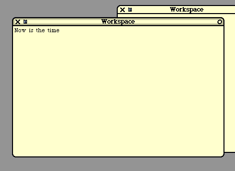
Figure 1
When the cursor is over any window, a scroll bar pops up on the left. In the next image, we see a scroll
bar, some highlighted text, and a pop-up menu showing some useful operations.
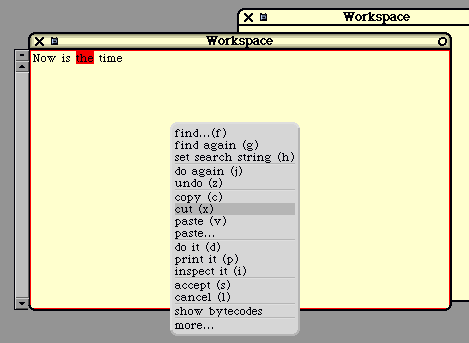
Figure 2
We can execute menu options directly or, in the case of some options, we can use a control key
sequence as a short-cut. For example, we can "cut" text with control-x.
You can do more in a workspace than just edit text. You can also directly execute pieces of Smalltalk
code from a workspace. Typically, a Smalltalk user will type in some expression, highlight it, and then
push the "print it" button. Let's evaluate the following Smalltalk expression:
2 + 3
We'll type it, highlight it, and select the "print it" command.
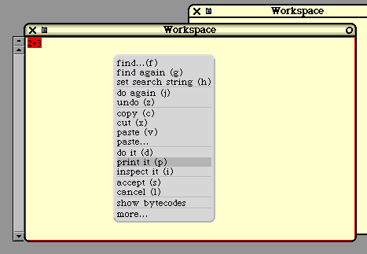
Figure 3
The expression will then be compiled and executed and the result will be inserted directly into the
workspace. We'll see this:
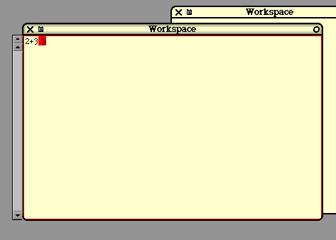
Figure 4
Sometimes the user will type in a simple expression, like the following, which will simply get some
complex body of code running. From then on, the code will interact with the user through additional
windows, menus, etc.
myObject startup
Or the programmer might type in a series of statements, perhaps including flow-of-control constructs.
In the next example, we will type some code into a workspace to create a new "Set" object and add
some items to it.
Each workspace has its own "namespace", so that any variables used are local to the workspace. In this
example, we'll use the variable "mySet" to refer to the new object. (In workspaces, variables need not
be declared before use.)
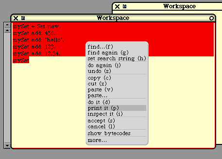
Figure 5
The "print it" button causes the highlighted code to be compiled, executed, and the result displayed. The
"print it" command inserts the result directly into the workspace and leaves it highlighted.
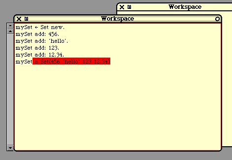
Figure 6
Typically, the programmer might use a workspace to write a code sequence. Perhaps the programmer
will execute it several times, changing it until the effect is just right. At this point, the code might be
saved to a file, or discarded, or pasted into some method. Or the programmer might just leave the code
in the workspace forever, going back to execute it whenever he or she wishes.
The "browser" is an interactive tool that allows the programmer to create, modify, and browse through
classes and their methods. The programmer may view and modify existing system classes, or may
create and modify new classes.
When you create a new class, you do not give any methods initially. In other words, the creation of a
class is a separate step from the addition of a method to a class. In fact, once the class is created, you
can immediately begin using the class, before a single method has been written. A class with no
methods may not be terribly useful, but remember that every class will inherit methods from its
superclass, even if it has none of its own.
The browser can be used to do the following kinds of actions:
Create a class
Delete a class
Add a new method
Recompile an existing method
Delete a method
Add or delete fields
Search for classes and methods
Above we discussed the syntax for methods, statements and expressions. In C++ and Java, there is also
a syntactic construct for an entire class, but in Smalltalk there is no syntactic construct for the class as a
whole. Instead, there is only the sequence of actions that lead to the creation of the class. Once the class
has been added to the system, the programmer may begin to add methods to the class.
To create a method, the programmer will type in the entire method and then push the "accept" button.
At that point the method is compiled. If there are compile-time errors, they are shown immediately and
the class is not modified. If the compilation succeeds, then the method is added to the class.
When a method is accepted, it is installed into the existing class hierarchy immediately, replacing the
previous version if there was one. This is a huge difference between Smalltalk and other languages:
Existing instances of the object continue to exist after the compilation. Objects that, in the past, used the
old version of a method (or failed to understand a message if there was no method) will, after the new
method is "accepted", use the new method without any special action.
What this means is that, in Smalltalk, the programmer can change the program while it is running,
whereas in Java or C++, a program cannot be changed once it has started execution. Effectively, a
change to some method, in Java or C++, will only affect objects created after the change is made, since
any change will involve another iteration in the compile-load-and-go cycle. In Smalltalk, the objects
alive and active, even while methods are added or recompiled. Consequently, any change to a method
will effect all the objects in that class, even objects created before the method was compiled.
The Smalltalk programmer may also change the class by adding or deleting fields. When this action is
taken, the system will immediately modify all existing instances of the class. For example, adding a
new field to a class will cause all the objects in the class to be enlarged. (The new field will be
initialized to "nil".)
In Smalltalk, the compile-load-and-go process that programmers are familiar with does not exist.
Instead, the objects are persistent and survive changes to their behavior. The concept of a "program" is
not well-defined or important. Instead, we just have the current "image" with its collection of classes,
objects and running threads.
In practice, the programmer will create objects and exercise their behavior (i.e., send messages to them).
If their behavior is not what is desired, the programmer will alter their behavior by modifying their
methods. The programmer will then re-send messages, re-testing the behavior of the same objects.
Next, we show an example of creating a class using the browser. We'll start by opening a browser
window and using it to look at some of the existing classes and methods. Here's a new browser window.
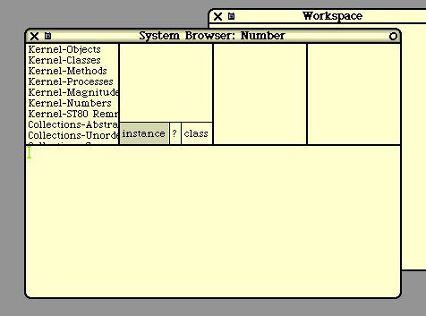
Figure 7
Now let's assume we want to look at the "rounded" method in class "Number". There are a number of
ways to locate a class or a method. Since we know the class name, we'll use the "find" menu option to
locate it. In the next figure, you'll see a menu and we are selecting the first option.
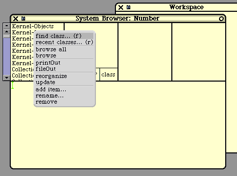
Figure 8
In the next figure, a "prompter" pops up, asking us to enter some text.
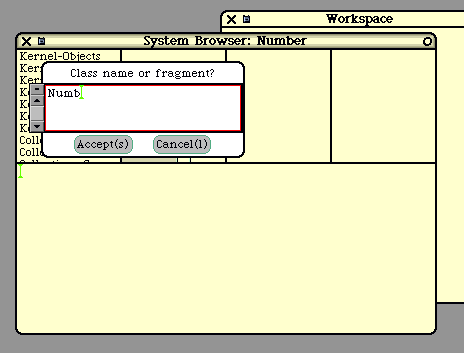
Figure 9
After we enter the class name, the browser locates the class and displays a list of its methods. This is
shown in the next figure below.
Classes are grouped into "categories". The "Number" class happens to be grouped into "Kernel-
Numbers". Within a class, all the methods are grouped into categories. "Number" has a bunch of
methods, grouped into categories like "arithmetic", "mathematical functions", etc. These categories
make it easier to organize and locate methods, especially in classes with lots of methods.
In the following figure, we see 4 sub-windows across the top of the browser. Each is a list and we can
scroll and select. The first sub-window is a list of all class categories. The second sub-window shows
all classes in the selected category. The third sub-window shows all method categories, and the fourth
window shows all methods in that category. Since we didn't remember the category of "rounded", we
just selected "all" categories. next, we scroll down looking for the desired method.
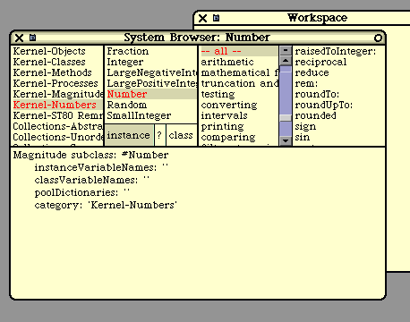
Figure 10
Upon selecting a method, we see its text in the bottom sub-window, as shown next.
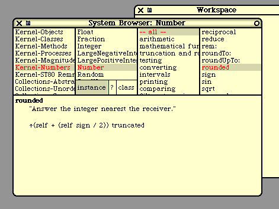
Figure 11
This method happens to be a fairly short method. We can also alter and recompile the method, if we
wish. There is no distinction between "system" methods and "user" methods, but altering the "rounded"
method is going to have widespread unpleasant consequences.
We can also use the browser to view the class tree. Pushing the button marked "?" will show us the
following. We see all superclasses of "Number" above it and all subclasses of "Number" below it.
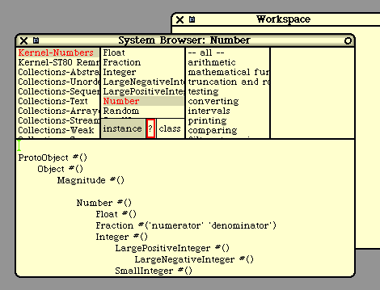
Figure 12
If we push the "?" button again, we would see a documentation comment associated with this class. We
can also use the browser to view and edit "class methods", by pushing the button marked "class".
Next, we will use the browser to create a new class. At the time we create a class, we must give it a
name. We must also specify its superclass and must enumerate all the fields in the new class. Let's
assume we've already created a new category called "White-Examples". After doing this, we'll see this:
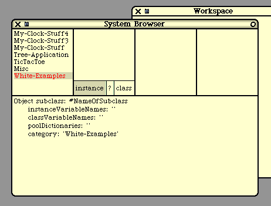
Figure 13
The text in the bottom sub-window is a template. In the next figure, we will modify it, filling in the new
class name and instance variables. We could also modify the superclass, but we'll just leave it as
"Object". When we have finished typing, we "accept". At this point, the class is created.
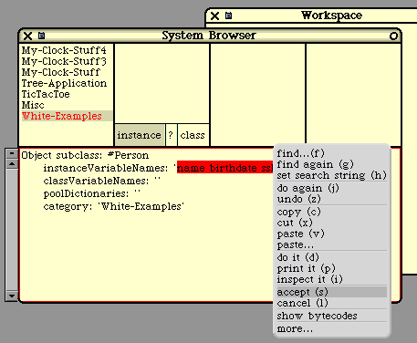
Figure 14
After the class is created, we can create some methods. The browser begins by presenting a template,
like this.
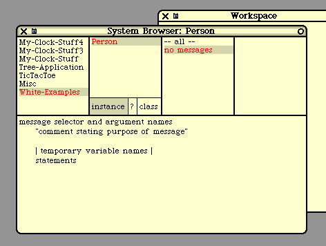
Figure 15
We'll replace this text by typing in our method code and "accept" it, as shown next.
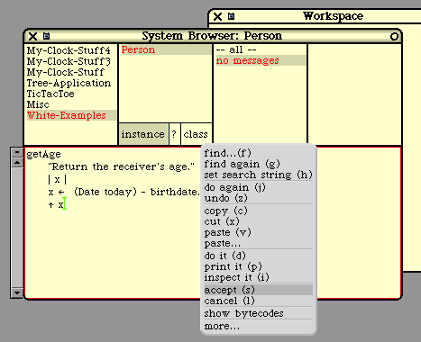
Figure 16
If there are compile-time errors, they are shown immediately and the method is not installed. Here is
how a parsing error would be shown:
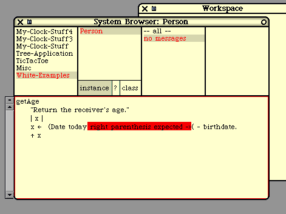
Figure 17
If you misspell a message, the compiler will flag the error by popping up the following menu,
suggesting some possible corrections. If you select a new spelling, the method text will be altered and
the compilation will continue. Or you can select "cancel" to terminate the compilation.
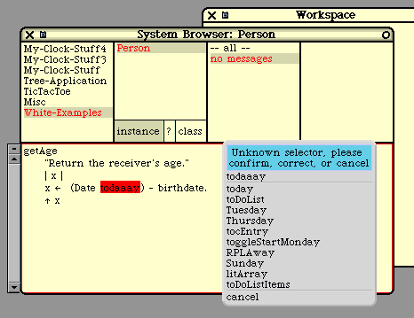
Figure 18
A similar menu pops up if you misspell a variable name.
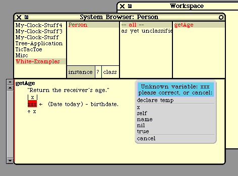
Figure 19
If the variable is spelled correctly, but we have forgotten to declare it, we can select "declare temp". For
the "getAge" method, this is not really what we want to do, but for the sake of exposition, let's select
"declare temp". The compiler will modify the method text and will continue. Next, the compiler will
notice that we are using variable "x" without first assigning it a value, so it will pop up a message to the
effect.
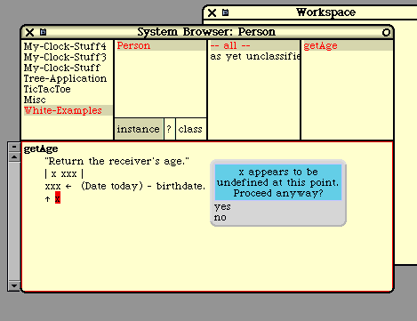
Figure 20
Smalltalk's approach, which allows the programmer to modify the code while the system is running,
really changes the nature of debugging.
When an error occurs, a debugger window will pop up with the error message. The program is not
terminated; instead the offending thread is merely suspended. While it is often the case that the
offending thread will need to be terminated, there are times when the programmer wishes to fix the
program and keep running it.
In some situations, a bug may arise only in very strange, complex cases that are difficult to re-create.
Upon encountering a bug, the Java or C++ programmer will first make sure the bug is repeatable. Often,
the programmer will first try to determine exactly which cases or data causes the bug to be manifested.
In Smalltalk, when an error arises, the thread is suspended but the data remains untouched and available
for inspection. The Smalltalk programmer will often start by looking at the data values immediately and
asking exactly where in the code was execution suspended.
The debugger allows the programmer to look at all the variables and look through the methods that are
currently suspended.
When a method is suspended, there is a calling stack (the stack of activation frames) for all the methods
that are currently active. Assume that method M1 was invoked by method M2, which was invoked by
M3, which was invoked by M4, and so on. Each of these involved a message-send and each is now
suspended.
The debugger can be used to browse this activation stack. The error itself arose in the method at the top
of this stack (M1), but the actual mistake (the bug) is often in another method buried a little deeper in
the stack (like M3 or M4). For example, an "array index out of bounds" error will occur in a method in
class Array, yet the problem may be in the method that called it, providing a faulty index value. Or the
bug may be in a third method that called the second method. This third method may have performed a
faulty calculation that lead to the faulty index value. It is convenient to be able to jump up and down in
the activation stack when looking for a bug.
Whenever the debugger displays a suspended method, the programmer can view the values of the
receiver's fields and the values of the formal parameters and local variables for that method. These are
displayed by name at the bottom of the window showing the method's code. The programmer can just
click on a name to see the value of that field or variable.
The debugger also allows the programmer to single step execution. When debugging, it is often
necessary to watch the program execute step by step to see where some faulty behavior first occurs. By
inserting this message-send in any method
self halt: 'Point one reached'
the programmer can invoke the debugger. The programmer can then look at variables or single-step
through the method. The method can be re-compiled or data values can be altered by hand and
execution can be resumed. Or the thread can simply be terminated.
Let's look at an example using the debugger. Assume that we have created a class called "Person"
which has the following fields:
name
birthdate
ssNumber
Also assume that we have an "initialize" method, which will set these fields to default values.
The following code will create a Person and send it the "initialize" message.
p := Person new.
p initialize
Let's assume that the "initialize" method also sends a message called "computeTaxes". This method
performs some computations. For the sake of this example, let's assume that the "computeTaxes"
method tries to send a message ("computeAdjustedIncome:") that is not understood by Person objects.
Perhaps we have not yet written it. This is the bug we would like to find.
What happens when we send "initialize"? We see the result below. An "error notifier" pops up and we
see 3 buttons and the stack of activation frames. The top frame has to do with the error processing itself
and can be ignored. The second frame is for the "computeTaxes" method. The third frame is for
"initialize", which called it. Below that, we see a bunch of other methods concerned with the
windowing system and compiler, which led up to the execution of the "initialize" method. We can
ignore these.
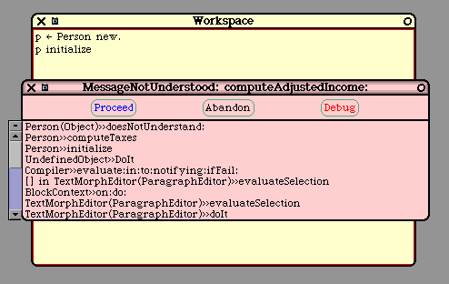
Figure 21
We have options to "proceed" or "abandon" this computation altogether, but we will choose to "debug"
it. We will then see the following debugger window. In the top sub-window, we see the stack of
activation frames, again.
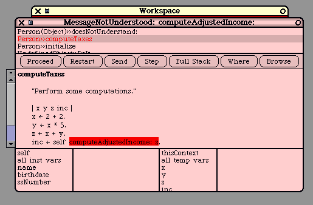
Figure 22
The expression that was being executed when the error occurred is automatically highlighted. At this
point, the programmer would probably realize the problem and fix it, but let's go on to demonstrate the
debugger's features.
Often, it is the case that the error is in another method. Perhaps (we might think), the bug is in the
method that called "computeTaxes". If we go to the top sub-window and click the "initialize" method,
we'll see the following. Notice that the expression currently being executed is highlighted. This shows
us exactly where in "initialize" we are executing.
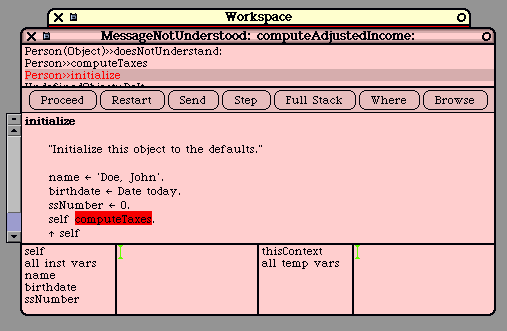
Figure 23
Let's go back to the "computeTaxes" method. This is shown in the next figure.
In the sub-windows at the bottom, we see the fields of the object on the left and the local variables on
the right. By clicking on them, we can see their values. Let's click on the "name" field and on "x" to
see their values.
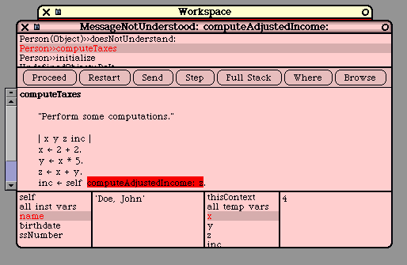
Figure 24
We can alter a field or variable by typing in a new value. Let's change "x" to 3. We just replace the "4"
with "3" and hit accept. In general, we can type in any expression here; it will be evaluated and the
result will be assigned to the variable or field.
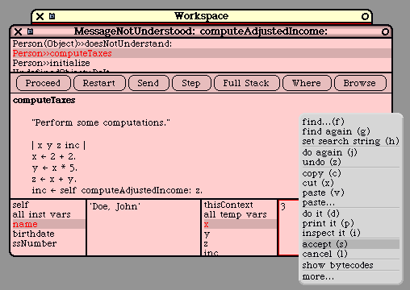
Figure 25
Next, let's assume that we have located the bug and we now want to fix it by modifying the method. In
this example, let's just delete the statement that caused the problem. We can edit the method text
directly and then "accept" the modified method.
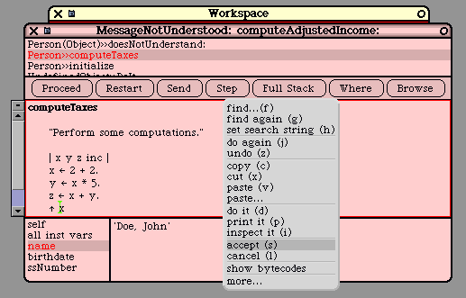
Figure 26
At this point, execution of this method has been interrupted by its recompilation. The system will back
up execution to the beginning of the method. After "accept"ing the new method, we see that execution
is suspended on the first message-send in the method, as shown next.
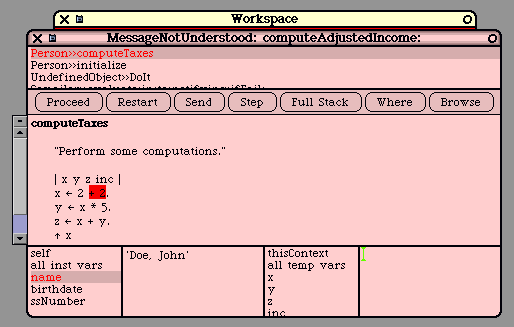
Figure 27
At any time, we may "single step" execution by repeatedly pressing the "step" button. To finish off this
example, we'll press the "proceed" button. Execution will resume and the debugger window will
disappear.
Each object knows how to display itself as human-readable text. Every object understands a method
called "printString". The common kinds of data (integers, real numbers, strings, booleans, etc.) display
themselves in the standard ways. Other classes of objects display themselves in ways appropriate to
them.
For example, here is how an instance of class "Set" would display itself:
a Set(456 'hello' 123 12.34)
Here is how an instance of class "Array" would display itself:
#('abc' 'def' 'ghi')
There is a method in class Object that provides a default implementation for "printString", but this
method is often overridden to provide a nicer, more human-readable string. For example, if we create a
class called "Person", we might override "printString" to print something like this (using the "name"
field):
aPerson(Porter,Harry)
However, some objects contain pointers to other objects. How are these objects to be displayed? One
approach is just to use the "printString" method, which will send "printString" recursively on the "sub-
objects". For example, here is how an Array containing other Arrays will display:
#(123 #('a1' 'a2' 'a3') #('b1' 'b2') 456)
This approach breaks down when either the data structures are recursive (i.e., they contain cyclic pointer
loops) or when the data structures are big. When the data structures are big, the system code works fine,
but the strings become incomprehensibly long.
To address this problem, Smalltalk provides a tool called the "inspector" that allows objects to be
viewed. For each object, the programmer can open an "inspector window" on the screen. These
windows are each independent and the programmer can have as many on the screen at once as he or she
needs.
Here is an example, showing 3 inspector windows, each looking at different Person objects:
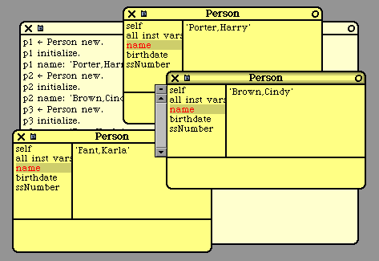
Figure 28
Each inspector window is used to examine a single object. The inspector may also be used to modify
objects. An inspector window will list all the fields of the object by name. The programmer can click
on any field and see the value of that field using its "printString".
Alternatively, when the field points to some other object, the programmer can ask for a new inspector
window on the object being pointed to. A new inspector window will pop up showing the object being
pointed to.
The programmer can also update objects by simply typing in a new value for some field.
During debugging, a programmer might typically walk through a huge data structure (with 1000's of
objects) looking for some specific object related to the bug. Inspector windows will momentarily litter
the screen as the programmer moves through the objects, occasionally backtracking to chase down a
different path in his search through the data. At any time, the programmer can send any message to any
object he or she encounters, perhaps to test various parts of his code.
All the tools (the "browser", the "debugger", and the "inspector") are well-integrated with each other.
For example, from the debugger, any variable or field can be inspected with the inspector at the click of
a button.
Smalltalk is more than just a language. The Smalltalk-80 system was originally delivered as a complete
operating system, designed to run on a bare machine. Smalltalk includes code for activities typically
performed at the operating system level.
For example, Smalltalk includes a "process scheduler" which implements threads and thread scheduling.
Smalltalk also includes code for accessing hardware I/O devices (disk, network, mouse, etc). It includes
a complete window system. In fact, the window interface provided back in 1980 served, in some sense,
as the initial prototype for all the window-based user interfaces that subsequently followed.
Almost all of the code in the Smalltalk system is written in Smalltalk itself, but there are several
"primitive routines" which are part of the virtual machine and which are coded in "C" or assembly
language. It is through these primitive routines that high-level Smalltalk code can get at the underlying
hardware.
In short, Smalltalk provides all the "system code" normally provided in an operating system. As such,
Smalltalk has been ported to several bare machines. In fact, given a bare machine with no OS, the
easiest approach to getting something fancy running might be to port Squeak.
But Smalltalk is usually run on top of an existing "host" operating system like Unix/Linux, Windows, or
the Mac OS. In this situation, Smalltalk sits on top of the OS and passes all calls to manipulate disk-
files, network-communication, and other devices straight-through to low-level OS interface routines. As
for the display screen, Smalltalk can run either in "full-screen mode", in which the underlying OS is
entirely hidden or it can run within a host OS window.
The Smalltalk virtual machine runs as a single process in the host OS. All of the Smalltalk threads are
completely invisible to the host OS. From the host OS, about all you can do is either "startup"
Smalltalk, "suspend" it, or "terminate" it altogether.
While Smalltalk is active, the keyboard and mouse have their own special Smalltalk behavior, which is
similar to, but slightly different from, the host OS behavior. For example, Unix/Linux, Windows, Mac
OS, and Smalltalk all use various "control key" combinations to make editing easier, but each OS uses a
slightly different set of key combinations. The mouse sprite (i.e., the "cursor arrow" that tracks the
mouse) looks slightly different in Unix/Linux, Windows, Mac OS, and Smalltalk.
Smalltalk "plays well" with the host OS and the outside world. For example, you can easily cut and
paste between a MSWord document and a Smalltalk "workspace". Common control keys sequences
(like "cut" and "paste", for example) are the same as in the host OS.
Smalltalk has many strong and innovative features, but a reasonable question is why Smalltalk did not
"catch on" more than it did. I think one reason was its whole-OS approach.
When Smalltalk-80 was introduced, it required an entire computer to use. This was very ambitious,
given hardware costs at the time. Computers were relatively expensive and uncommon. Of course
another factor was that Smalltalk was not mass marketed to the public at the time, while Microsoft,
IBM, DEC, and Apple were installing a lot computers because of their extensive advertising campaigns.
In the early days of Smalltalk, several deliverable systems were programmed in Smalltalk, but the high
cost of a dedicated Smalltalk machine was a barrier in many applications. At that time, the memory
footprint of Smalltalk was considered absolutely huge (as much as 1 or 2 megabytes). This large
memory requirement was a "show stopper" for a large number of applications, in days when computer
memory was measured in "Kbytes" not "Mbytes".
Today, the memory requirements of Smalltalk are roughly the same as for (say) MSWord. Even though
memory size is no longer the slightest barrier, Smalltalk developed a reputation as a "memory hog".
Squeak has even been ported to handheld "palm" devices and is now being used in embedded
applications. Although this problem is now "solved", it accounted for slow early adoption of Smalltalk
and, consequently, fewer users today.
Smalltalk is an interpreted system, and in 1980 there was a very negative stigma against interpreted
languages. Interpreted languages will always be slower than truly compiled languages like "C++", but
today the climate is different. Processors are much faster, and programs are much more complex. The
added programmability and reliability of an interpreted language often outweighs the speed of a truly
compiled language, allowing languages like Java to succeed, where they would not have stood a chance
in 1980.
One shortcoming of Smalltalk is that it is an operating system (as well as a language) and is therefore
often viewed as being in direct competition with Unix/Linux, Windows, and the Mac OS, rather than
being just another application running on top of the OS. Smalltalk will never win in that competition.
Consumers seem to choose an OS based on (1) what applications the OS has, (2) marketing appeals, (3)
price and availability, and (4) what other consumers are doing. Many first-time computer consumers
feel they don't know much about operating systems and are unable to evaluate them. They are more-or-
less afraid of the OS and usually prefer the safety of going with the herd. (The PC marketing exploits
this effect most effectively.)
Smalltalk was never pushed by any corporation; it has always been "grass-roots software", used by
experienced programmers who are looking for something better, something innovative. In the 1980's
and 1990's its use spread widely among this group, but nothing in comparison to computer use in
general.
Over the last two decades, a lot of code has been written for Unix, the PC, and the Mac. Today there is
a huge installed base of Unix, PC, and Mac application software and a huge number of consumers who
have managed to learn the Unix, Windows, or Mac systems. These people will not abandon their
investments without a fight.
Smalltalk has not really kept up in the applications area. Today Smalltalk comes with a web browser, an
email reader, a text editor, and a drawing/painting tool. Although these tools are clean and simple and
quite serviceable, they lack the maturity, elaboration, and fine-tuning that years of widespread use have
brought to programs like MSWord or Internet Explorer, or the main-line operating systems themselves.
Frankly, I do not foresee Smalltalk, as an operating system, making any headway against the entrenched
giants of Unix/Linux, Windows, and Mac OS. Instead, I see the future of Smalltalk occurring on top of
another OS.
I foresee Smalltalk remaining a strong, niche programming language and development environment,
used among more sophisticated programmers. I feel it is a pleasure to program in Smalltalk and, after
using many languages and systems, Smalltalk remains my favorite, hands down. If I have to code
something up from scratch, I always prefer Smalltalk. I also feel Smalltalk is an excellent language to
teach students, since it shows what a programming language can be and allows students to focus on the
grander aspects of programming.
Overall, I feel that Smalltalk is a very strong language, with both an important history and a bright
future. The recent Squeak implementation has breathed new life into the Smalltalk community.
Suddenly, Smalltalk is available easily and freely. In conjunction with the growing sophistication of
programmers, there is no doubt that Smalltalk will continue to grow and thrive. As more and more
programmers look for better languages, more and more will discover Smalltalk.
The key website is:
www.squeak.org
From this site you can download a version of Smalltalk to run on your computer. You can also find
links to lots of additional documentation and commentary.
An HTML version of the document you are reading is at:
www.cs.pdx.edu/~harry/musings/SmalltalkOverview.html
An PDF version of the document you are reading is at:
www.cs.pdx.edu/~harry/musings/SmalltalkOverview.pdf
You have my permission to copy and distribute this document without restriction, as long as it is not
altered.
harry@cs.pdx.edu
I really appreciate your feedback on this document and I thank you in advance for any typos, mistakes,
errors, confusing wordings, ambiguous phrasings, sloppy writing, imprecise thinking, or just plain bad
writing, that you might bring to my attention!
The author has programmed in the following languages: Smalltalk, Java, C/C++, Fortran, Cobol, Lisp,
APL, Basic, ML, Prolog, Algol-60, Pascal, PL/I, Euclid, Eiffel, Snobol, and others too obscure to
mention. The author has written assembly programs for several machines, including the IBM 360/67,
Intel 8080, Motorola 68K, and more recently, the SPARC.
The author has written at least two assemblers, a text editor, a linker, a number of compilers, a small
operating system, a LISP interpreter, a Prolog interpreter, a bytecode interpreter similar to Smalltalk, a
RISC machine emulator, and various debuggers.
The author has designed a statically typed, object-oriented language called "Portlandish", which he
implemented and has programmed extensively in. He designed (and saw fabricated) a 4-bit micro-
processor using NMOS chip technology.
Most recently, the author has designed a RISC processor architecture for student educational use and is
working on various software components in support of this framework.
The author's Ph.D. concerned Natural Language Processing and involved a logic-based language /
grammar formalism he devised and implemented. He teaches habitually at Portland State University.